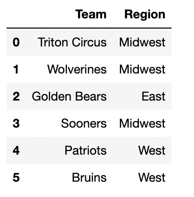

← return to practice.dsc10.com
Below are practice problems tagged for Lecture 9 (rendered directly from the original exam/quiz sources).
Suppose we create a DataFrame called socal containing
only King Triton’s flights departing from SAN, LAX, or SNA (John Wayne
Airport in Orange County). socal has 10 rows; the bar chart
below shows how many of these 10 flights departed from each airport.
Consider the DataFrame that results from merging socal
with itself, as follows:
double_merge = socal.merge(socal, left_on='FROM', right_on='FROM')How many rows does double_merge have?
Answer: 38
There are two flights from LAX. When we merge socal with
itself on the 'FROM' column, each of these flights gets
paired up with each of these flights, for a total of four rows in the
output. That is, the first flight from LAX gets paired with both the
first and second flights from LAX. Similarly, the second flight from LAX
gets paired with both the first and second flights from LAX.
Following this logic, each of the five flights from SAN gets paired with each of the five flights from SAN, for an additional 25 rows in the output. For SNA, there will be 9 rows in the output. The total is therefore 2^2 + 5^2 + 3^2 = 4 + 25 + 9 = 38 rows.
The average score on this problem was 27%.
We also have a DataFrame that contains the distribution of
“BodyStyle” for all “Brands” in evs, other than Nissan.

Suppose we’ve run the following few lines of code.
tesla = evs[evs.get("Brand") == "Tesla"]
bmw = evs[evs.get("Brand") == "BMW"]
audi = evs[evs.get("Brand") == "Audi"]
combo = tesla.merge(bmw, on="BodyStyle").merge(audi, on="BodyStyle")How many rows does the DataFrame combo have?
21
24
35
65
72
96
Answer: 35
Let’s attempt this problem step-by-step. We’ll first determine the
number of rows in tesla.merge(bmw, on="BodyStyle"), and
then determine the number of rows in combo. For the
purposes of the solution, let’s use temp to refer to the
first merged DataFrame,
tesla.merge(bmw, on="BodyStyle").
Recall, when we merge two DataFrames, the resulting
DataFrame contains a single row for every match between the two columns,
and rows in either DataFrame without a match disappear. In this problem,
the column that we’re looking for matches in is
"BodyStyle".
To determine the number of rows of temp, we need to
determine which rows of tesla have a
"BodyStyle" that matches a row in bmw. From
the DataFrame provided, we can see that the only
"BodyStyle"s in both tesla and
bmw are SUV and sedan. When we merge tesla and
bmw on "BodyStyle":
tesla each match the 1 SUV row in
bmw. This will create 4 SUV rows in temp.tesla each match the 1 sedan row in
bmw. This will create 3 sedan rows in
temp.So, temp is a DataFrame with a total of 7 rows, with 4
rows for SUVs and 3 rows for sedans (in the "BodyStyle")
column. Now, when we merge temp and audi on
"BodyStyle":
temp each match the 8 SUV rows in
audi. This will create 4 \cdot 8
= 32 SUV rows in combo.temp each match the 1 sedan row in
audi. This will create 3 \cdot 1
= 3 sedan rows in combo.Thus, the total number of rows in combo is 32 + 3 = 35.
Note: You may notice that 35 is the result of multiplying the
"SUV" and "Sedan" columns in the DataFrame
provided, and adding up the results. This problem is similar to Problem 5 from the Fall 2021
Midterm).
The average score on this problem was 45%.
Below, we provide the same DataFrame as shown at the start of the previous problem, which contains the distribution of “BodyStyle” for all “Brands” in evs, other than Nissan.
Suppose we’ve run the following few lines of code.
tesla = evs[evs.get("Brand") == "Tesla"]
bmw = evs[evs.get("Brand") == "BMW"]
audi = evs[evs.get("Brand") == "Audi"]
combo = tesla.merge(bmw, on="BodyStyle").merge(audi, on="BodyStyle")How many rows does the DataFrame combo have?
21
24
35
65
72
96
Answer: 35
Let’s attempt this problem step-by-step. We’ll first determine the
number of rows in tesla.merge(bmw, on="BodyStyle"), and
then determine the number of rows in combo. For the
purposes of the solution, let’s use temp to refer to the
first merged DataFrame,
tesla.merge(bmw, on="BodyStyle").
Recall, when we merge two DataFrames, the resulting
DataFrame contains a single row for every match between the two columns,
and rows in either DataFrame without a match disappear. In this problem,
the column that we’re looking for matches in is
"BodyStyle".
To determine the number of rows of temp, we need to
determine which rows of tesla have a
"BodyStyle" that matches a row in bmw. From
the DataFrame provided, we can see that the only
"BodyStyle"s in both tesla and
bmw are SUV and sedan. When we merge tesla and
bmw on "BodyStyle":
tesla each match the 1 SUV row in
bmw. This will create 4 SUV rows in temp.tesla each match the 1 sedan row in
bmw. This will create 3 sedan rows in
temp.So, temp is a DataFrame with a total of 7 rows, with 4
rows for SUVs and 3 rows for sedans (in the "BodyStyle")
column. Now, when we merge temp and audi on
"BodyStyle":
temp each match the 8 SUV rows in
audi. This will create 4 \cdot 8
= 32 SUV rows in combo.temp each match the 1 sedan row in
audi. This will create 3 \cdot 1
= 3 sedan rows in combo.Thus, the total number of rows in combo is 32 + 3 = 35.
Note: You may notice that 35 is the result of multiplying the
"SUV" and "Sedan" columns in the DataFrame
provided, and adding up the results. This problem is similar to Problem 5 from the Fall 2021
Midterm).
The average score on this problem was 45%.
Consider the DataFrame combo, defined below.
combo = txn.groupby(["is_fraud", "method", "card"]).mean()What is the maximum possible value of combo.shape[0]?
Give your answer as an integer.
Answer: 16
combo.shape[0] will give us the number of rows of the
combo DataFrame. Since we’re grouping by
"is_fraud", "method", and "card",
we will have one row for each unique combination of values in these
columns. There are 2 possible values for "is_fraud", 2
possible values for "method", and 2 possible values for
"card", so the total number of possibilities is 2 * 2 * 4 =
16. This is the maximum number possible because 16 combinations of
"is_fraud", "method", and "card"
are possible, but they may not all exist in the data.
The average score on this problem was 75%.
What is the value of combo.shape[1]?
1
2
3
4
5
6
Answer: 2
combo.shape[1] will give us the number of columns of the
DataFrame. In this case, we’re using .mean() as our
aggregation function, so the resulting DataFrame will only have columns
with numeric types (since BabyPandas automatically ignores columns which
have a data type incompatible with the aggregation function). In this
case, "amount" and "lifetime" are the only
numeric columns, so combo will have 2 columns.
The average score on this problem was 47%.
The DataFrame seven, shown below to the
left, consists of a simple random sample of 7 rows from
txn, with just the "is_fraud" and
"amount" columns selected.
The DataFrame locations, shown below to the
right, is missing some values in its
"is_fraud" column.

Fill in the blanks to complete the "is_fraud" column of
locations so that the DataFrame
seven.merge(locations, on="is_fraud") has
19 rows.
Answer A correct answer has one True
and three False rows.
We’re merging on the "is_fraud" column, so we want to
look at which rows have which values for "is_fraud". There
are only two possible values (True and False),
and we see that there are two Trues and 5
Falses in seven. Now, think about what happens
“under the hood” for this merge, and how many rows are created when it
occurs. Python will match each True in seven
with each True in the "is_fraud" column of
location, and make a new row for each such pair. For
example, since Toronto’s row in location has a
True value in location, the merged DataFrame
will have one row where Toronto is matched with the transaction of
$34.92 and one where Toronto is matched with the transaction of $25.07.
More broadly, each True in locations creates 2
rows in the merged DataFrame, and each False in
locations creates 5 rows in the merged DataFrame. The
question now boils down to creating 19 by summing 2s and 5s. Notice that
19 = 3\cdot5+2\cdot2. This means we can
achieve the desired 19 rows by making sure the locations
DataFrame has three False rows and two True
rows. Since location already has one True, we
can fill in the remaining spots with three Falses and one
True. It doesn’t matter which rows we make
True and which ones we make False, since
either way the merge will produce the same number of rows for each (5
each for every False and 2 each for every
True).
The average score on this problem was 88%.
True or False: It is possible to fill in the four blanks in the
"is_fraud" column of locations so that the
DataFrame seven.merge(locations, on="is_fraud") has
14 rows.
True
False
Answer: False
As we discovered by solving problem 5.1, each False
value in locations gives rise to 5 rows of the merged
DataFrame, and each True value gives rise to 2 rows. This
means that the number of rows in the merged DataFrame will be m\cdot5 + n\cdot2, where m is the number of
Falses in location and n is the number of
Trues in location. Namely, m and n are
integers that add up to 5. There’s only a few possibilities so we can
try them all, and see that none add up 14:
0\cdot5 + 5\cdot2 = 10
1\cdot5 + 4\cdot2 = 13
2\cdot5 + 3\cdot2 = 16
3\cdot5 + 2\cdot2 = 19
4\cdot5 + 1\cdot2 = 22
The average score on this problem was 79%.
For those who plan on having children, an important consideration
when deciding whether to live in an area is the cost of raising children
in that area. The DataFrame expensive, defined below,
contains all of the rows in living_cost where the
"avg_childcare_cost" is at least $20,000.
expensive = living_cost[living_cost.get("avg_childcare_cost")
>= 20000]We’ll call a county an “expensive county" if there is at
least one "family_type" in that county with an
"avg_childcare_cost" of at least $20,000. Note that all
expensive counties appear in the expensive DataFrame, but
some may appear multiple times (if they have multiple
"family_type"s with an "avg_childcare_cost" of
at least $20,000).
Recall that the "is_metro" column contains Boolean
values indicating whether or not each county is part of a metropolitan
(urban) area. For all rows of living_cost (and, hence,
expensive) corresponding to the same geographic location,
the value of "is_metro" is the same. For instance, every
row corresponding to San Diego County has an "is_metro"
value of True.
Fill in the blanks below so that the result is a DataFrame indexed by
"state" where the "is_metro" column gives the
proportion of expensive counties in each state that are part of
a metropolitan area. For example, if New Jersey has five
expensive counties and four of them are metropolitan, the row
corresponding to a New Jersey should have a value of 0.8 in the
"is_metro" column.
(expensive.groupby(____(a)____).max()
.reset_index()
.groupby(____(b)____).____(c)____)What goes in blank (a)?
Answer: ["state", "county"] or
["county", "state"]
We are told that all expensive counties appear in the
expensive DataFrame, but some may appear multiple times,
for several different "family_type" values. The question we
want to answer, however, is about the proportion of expensive counties
in each state that are part of a metropolitan area, which has nothing to
do with "family_type". In other words, we don’t want or
need multiple rows corresponding to the same US county.
To keep just one row for each US county, we can group by both
"state" and "county" (in either order). Then
the resulting DataFrame will have one row for each unique combination of
"state" and "county", or one row for each US
county. Notice that the .max() aggregation method keeps the
last alphabetical value from the "is_metro" column in each
US county. If there are multiple rows in expensive
corresponding to the same US county, we are told that they will all have
the same value in the "is_metro" column, so taking the
maximum just takes any one of these values, which are all the same. We
could have just as easily taken the minimum.
Notice the presence of .reset_index() in the provided
code. That is a clue that we may need to group by multiple columns in
this problem!
The average score on this problem was 14%.
What goes in blank (b)?
Answer: "state"
Now that we have one row for each US county that is considered
expensive, we want to proceed by calculating the proportion of expensive
counties within each state that are in a metropolitan area. Our goal is
to organize the counties by state and create a DataFrame indexed only by
"state" so we want to group by "state" to
achieve this.
The average score on this problem was 68%.
What goes in blank (c)?
Answer: mean()
Recall that the "is_metro" column consists of Boolean
values, where True equals 1 and False equals
0. Notice that if we take the average of the "is_metro"
column for all the counties in a given state, we’ll be computing the sum
of these 0s and 1s (or the number of True values) divided
by the total number of expensive counties in that state. This gives the
proportion of expensive counties in the state that are in a metropolitan
area. Thus, when we group the expensive counties according to what state
they are in, we can use the .mean() aggregation method to
calculate the proportion of expensive counties in each state that are in
a metropolitan area.
The average score on this problem was 35%.
Recall that living_cost has 31430 rows, one for each of the ten possible
"family_type" values in each of the 3143 US counties.
Consider the function state_merge, defined below.
def state_merge(A, B):
state_A = living_cost[living_cost.get("state") == A]
state_B = living_cost[living_cost.get("state") == B]
return state_A.merge(state_B, on="family_type").shape[0]Suppose Montana ("MT") has 5 counties, and suppose
state_merge("MT", "NV") evaluates to 1050. How
many counties does Nevada ("NV") have? Give your answer as
an integer.
Answer 21
We are told Montana has 5 counties. We don’t know how many counties
Nevada has, but let’s call the number of counties in Nevada x and see how many rows the merged DataFrame
should have, in terms of x. If Montana
has 5 counties, since there are 10 "family_type" values per
county, this means the state_A DataFrame has 50 rows.
Similarly, if Nevada has x counties,
then state_B has 10x rows.
When we merge on "family_type", each of the 5 rows in
state_A with a given "family_type" (say
"2a3c") will match with each of the x rows in state_B with that same
"family_type". This will lead to 5x rows in the output corresponding to each
"family_type", and since there are 10 different values for
"family_type", this means the final output will have 50x rows.
We are told that the merged DataFrame has 1050 rows, so we can find x by solving 50x = 1050, which leads to x = 21.
The average score on this problem was 36%.
Select the correct way to fill in the blank such that the code below
evaluates to True.
treat.groupby(______).mean().shape[0] == treat.shape[0] "address"
"candy"
"neighborhood"
["address", "candy"]
["candy", "neighborhood"]
["address", "neighborhood"]
Answer: ["address", "candy"]
.shape returns a tuple containing the number of rows and
number of columns of a DataFrame respectively. By indexing
.shape[0] we get the number of rows. In the above question,
we are comparing whether the number of rows of treat
grouped by its column(s) is equal to the number of rows of the original
treat itself. This is only possible when there is a unique
row for each value in the column or for each combination of columns.
Since it is possible for an address to give out different types of
candy, values in "address" can show up multiple times.
Similarly, values in "candy" can also show up multiple
times since more than one house may give out a specific candy. A
neighborhood has multiple houses, so if a neighborhood has more than one
house, "neighborhood" will appear multiple times.
% write for combinations here % Each address gives out a specific
candy only once, and hence ["address", "candy"] would have
a unique row for each combination. This would make the number of rows in
the grouped DataFrame equal to treat itself. Multiple
neighborhoods might be giving out the same candy or a single
neighborhood could be giving out multiple candies, so
["candy", "neighborhood"] is not the answer. Finally, a
neighborhood can have multiple addresses, but each address could be
giving out more than one candy, which would mean this combination would
occur multiple times in treat, which means this would also
not be an answer. Since ["address", "candy"] is the only
combination that gives a unique row for each combination, the grouped
DataFrame would contain the same number of rows as treat
itself.
The average score on this problem was 69%.
Assume that all houses in treat give out the same size
candy, say fun-sized. Suppose we have an additional DataFrame,
trick, which is indexed by "candy" and has one
column, "price", containing the cost in dollars of a
single piece of fun-sized candy, as a
float.
Suppose that:
treat has 200 rows total, and includes 15 distinct
types of candies.
trick has 25 rows total: 15 for the candies that
appear in treat, plus 10 additional rows that correspond to
candies not represented in treat.
Consider the following line of code:
trick_or_treat = trick.merge(treat, left_index = True, right_on = "candy")How many rows does trick_or_treat have?
15
25
200
215
225
3000
5000
Answer: 200
We are told that trick has 25 rows: 15 from candies that
are in treat and 10 additional candies. This means that
each candy in trick appears exactly once because 15+10= 25.
In addition, a general property when merging dataframes is that the
number of rows for one shared value between the dataframes is the
product of the number of occurences in either dataframe. For example, if
Twix occurs 5 times in treat, the number of times it occurs
in trick_or_treat is 5 * 1 = 5 (it occurs once in
trick). Using this logic, we can determine how many rows
are in trick_or_treat. Since each number of candies is
multipled by one and they sum up to 200, the number of rows will be
200.
The average score on this problem was 39%.
In the early 1990s, computational linguists developed the Penn
Treebank part of speech tagging system. In this system, there are 36 tags that represent different parts of
speech. The tags, their meanings, and a few examples are given in the
tags DataFrame, whose first five rows are shown here.

All of the values in the "ps" column of
words are tags from the Penn Treebank system. Remember,
we’re assuming that we’ve already applied the fix_ps
function from the previous problem.
We want to merge words with tags so that we
can see the meaning of each word’s part of speech tag more easily. Fill
in the blank in the code below to accomplish this.
Note that the index is lost when merging, so in order to keep
"word" as the index of our result, we have to use
reset_index() before merging, then set the index to
"word" again after merging.
merged = words.reset_index().merge(__(a)__).set_index("word")
merged(a): tags, left on="ps", right on="tag"
We want to merge the words dataframe with the tags dataframe, and we
want both to merge on the column with the tags in them. In the words df,
this is the "ps" column, and in the tags df this is the
"tag" column.
The average score on this problem was 75%.
Suppose words contains 5357 rows and tags contains
36 rows. How many rows does
merged contain? Give your answer as an integer or a
mathematical expression that evaluates to an integer.
Answer: 5357
When we merge words with tags, we know that
there are 36 unique rows in tags. This means that for every row in
words, there is only one row in tags that it
will be able to merge with in this new df. This means that every row in
words corresponds to only one row in , meaning that the new
merged df will have the same amount of rows as the words
df, or 5337.
The average score on this problem was 62%.
Suppose we have a function classify_difficulty that
takes as input the number of students that marked a word difficult, and
returns a difficulty rating of the word: "easy",
"moderate", or "hard". Define the DataFrame
grouped as follows. Note that this uses the
classify_length function from the previous problem.
grouped = (words.assign( diff_category =
words.get("diff").apply(classify_difficulty),
length_category =
words.get("length").apply(classify_length)
)
.groupby(["diff_category", "length_category"])
.count()
.reset_index()
)Suppose there is at least one word with every
possible pair of values for "diff_category" and
"length_category".
How many rows does grouped have? Give your answer as an
integer.
Answer: 9
The code groups the dataframe by two columns, so the number of rows
will be the number of combinations between the two rows. So the two
columns are ‘diff_category’: ("easy", "moderate", "hard") and
‘length_category’: ("short", "medium", "long"), and 3 columns x 3
columns = 9 columns.
The average score on this problem was 77%.
Fill in the blank to set num to the number of words
whose "diff_category" is "hard" and whose
"length_category" is "short". Recall that
.groupby arranges the rows of its output in alphabetical
order.
num = grouped.get("ps").iloc[__(a)__](a): 5
As stated in the last answer, the options for the two indicies are ’diff category’: (”easy”, ”moderate”, ”hard”) and ’length category’: (”short”, ”medium”, ”long”), with ’diff category’ coming first then ’length category’. We want to find the row that is “hard” and ”short”. If we sort each index alphabetically, we get (”easy”, ”hard”, ”moderate”) and (”medium”, ”long”, ”short”). Then, the dataframe looks like ”easy” difficulty for indices 0-2, ”hard” dif- ficulty for 3-5, and medium for 6-8, with each difficulty’s first row being ”medium”, second being ”long”, and last being ”short”. Since we want the hard, short word, we go hard → indices 3-5, then hard and short → index 5.
The average score on this problem was 52%.
We want to determine the proportion of "short" words
that are "hard". Fill in the blanks in the code below such
that prop evaluates to this proportion.
denom = grouped[__(b)__].get("freq").__(c)__
prop = num / denom(b):
grouped.get("length category") == short
We want the proportion of short words that are hard. Remember,
proportions are usually a part of the data divided by the whole sample
space. We already have the row that is the part of the data, which we
did in part b. Therefore, the denom should be the whole sample space,
which in this case is the total amount of short words. So, when we
query, we want only the short words, which we get by querying with
grouped.get("length category") == short.
(c): .sum()
Once we get the freq column, we’re left with one row
indexed by "short" with three subentries for each
difficulty, so we need to use.sum()
The average score on this problem was 38%.
Recall that we have the complete set of currently available discounts
in the DataFrame offers.
The DataFrame with_offers is created as follows.
(with_offers = ikea.take(np.arange(6))
.merge(offers, left_on='category',
right_on='eligible_category'))How many rows does with_offers have?
Answer: 11
First, consider the DataFrame ikea.take(np.arange(6)),
which contains the first six rows of ikea. We know the
contents of these first six rows from the preview of the DataFrame at
the start of this exam. To merge with offers, we need to
look at the 'category' of each of these six rows and see
how many rows of offers have the same value in the
'eligible_category' column.
The first row of ikea.take(np.arange(6)) is a
'bed'. There are two 'bed' offers, so that
will create two rows in the output DataFrame. Similarly, the second row
of ikea.take(np.arange(6)) creates two rows in the output
DataFrame because there are two 'outdoor' offers. The third
row creates just one row in the output, since there is only one
'dresser' offer. Continuing row-by-row in this way, we can
sum the number of rows created to get: 2+2+1+2+2+2 = 11.
Pandas Tutor is a really helpful tool to visualize the merge process. Below is a color-coded visualization of this merge, generated by the code here.

The average score on this problem was 41%.
How many rows of with_offers have a value of 20 in the
'percent_off' column?
Answer: 2
There is just one offer with a value of 20 in the
'percent_off' column, and this corresponds to an offer on a
'bed'. Since there are two rows of
ikea.take(np.arange(6)) with a 'category' of
'bed', each of these will match with the 20 percent-off
offer, creating two rows of with_offers with a value of 20
in the 'percent_off' column.
The
visualization
from Pandas Tutor below confirms our answer. The two rows with a
value of 20 in the 'percent_off' column are both shown in
rows 0 and 2 of the output DataFrame.
The average score on this problem was 70%.
If you can use just one offer per product, you’d want to use the one that saves you the most money, which we’ll call the best offer.
True or False: The expression below evaluates to a
Series indexed by 'product' with the name of the best offer
for each product that appears in the with_offers
DataFrame.
with_offers.groupby('product').max().get('offer')True
False
Answer: False
Recall that groupby applies the aggregation function
separately to each column. Applying the .max() aggregate on
the 'offer' column for each group gives the name that is
latest in alphabetical order because it contains strings, whereas
applying the .max() aggregate on the
'percent_off' column gives the largest numerical value.
These don’t necessarily go together in with_offers.
In particular, the element of
with_offers.groupby('product').max().get('offer')
corresponding to the LAPPLAND TV storage unit will be
'get_organized_promo'. This happens because the two rows of
with_offers corresponding to the LAPPLAND TV storage unit
have values of 'get_organized_promo' and
'birthday coupon', but 'get_organized_promo'
is alphabetically later, so it’s considered the max by
.groupby. However, the 'birthday coupon' is
actually a better offer, since it’s 15 percent off, while the
'get_organized_promo' is only 10 percent off. The
expression does not actually find the best offer for each product, but
instead finds the latest alphabetical offer for each product.
We can see this directly by looking at the output of Pandas Tutor below, generated by this code.

The average score on this problem was 69%.
You want to add a column to with_offers containing the
price after the offer discount is applied.
with_offers = with_offers.assign(after_price = _________)
with_offersWhich of the following could go in the blank? Select all that apply.
with_offers.get('price') - with_offers.get('percent_off')/100
with_offers.get('price')*(100 - with_offers.get('percent_off'))/100
with_offers.get('price') - with_offers.get('price')*with_offers.get('percent_off')/100
with_offers.get('price')*(100 - with_offers.get('percent_off')/100)
Answer:
with_offers.get('price')*(100 - with_offers.get('percent_off'))/100,
(with_offers.get('price') - with_offers.get('price')*with_offers.get('percent_off')/100)
Notice that all the answer choices use
with_offers.get('price'), which is a Series of prices, and
with_offers.get('percent_off'), which is a Series of
associated percentages off. Using Series arithmetic, which works
element-wise, the goal is to create a Series of prices after the
discount is applied.
For example, the first row of with_offers corresponds to
an item with a price of 254 dollars, and a discount of 20 percent off,
coming from the snooze sale. This means its price after the discount
should be 80 percent of the original value, which is 254*0.8 = 203.2 dollars.
Let’s go through each answer in order, working with this example.
The first answer choice takes the price and subtracts the percent off divided by 100. For our example, this would compute the discounted price as 254 - 20/100 = 253.8 dollars, which is incorrect.
The second answer choice multiplies the price by the quantity 100 minus the percent off, then divides by 100. This works because when we subtract the percent off from 100 and divide by 100, the result represents the proportion or fraction of the cost we must pay, and so multiplying by the price gives the price after the discount. For our example, this comes out to 254*(100-20)/100= 203.2 dollars, which is correct.
The third answer choice is also correct. This corresponds to taking the original price and subtracting from it the dollar amount off, which comes from multiplying the price by the percent off and dividing by 100. For our example, this would be computed as 254 - 254*20/100 = 203.2 dollars, which is correct.
The fourth answer multiplies the price by the quantity 100 minus the percent off divided by 100. For our example, this would compute the discounted price as 254*(100 - 20/100) = 25349.2 dollars, a number that’s nearly one hundred times the original price!
Therefore, only the second and third answer choices are correct.
The average score on this problem was 79%.
For each offer currently available, the DataFrame offers
has a separate row for each category of products to which the offer can
be applied. The columns are:
'offer' (str): the name of the offer'category' (str): the category to which
the offer applies'percent_off' (int): the percent discount
when applying this offer to this categoryThe full offers DataFrame is shown below. All rows are
pictured.
The DataFrame with_offers is created as follows.
(with_offers = ikea.take(np.arange(6))
.merge(offers, left_on='category',
right_on='eligible_category'))How many rows does with_offers have?
Answer: 11
First, consider the DataFrame ikea.take(np.arange(6)),
which contains the first six rows of ikea. We know the
contents of these first six rows from the preview of the DataFrame at
the start of this exam. To merge with offers, we need to
look at the 'category' of each of these six rows and see
how many rows of offers have the same value in the
'eligible_category' column.
The first row of ikea.take(np.arange(6)) is a
'bed'. There are two 'bed' offers, so that
will create two rows in the output DataFrame. Similarly, the second row
of ikea.take(np.arange(6)) creates two rows in the output
DataFrame because there are two 'outdoor' offers. The third
row creates just one row in the output, since there is only one
'dresser' offer. Continuing row-by-row in this way, we can
sum the number of rows created to get: 2+2+1+2+2+2 = 11.
Pandas Tutor is a really helpful tool to visualize the merge process. Below is a color-coded visualization of this merge, generated by the code here.
The average score on this problem was 41%.
How many rows of with_offers have a value of 20 in the
'percent_off' column?
Answer: 2
There is just one offer with a value of 20 in the
'percent_off' column, and this corresponds to an offer on a
'bed'. Since there are two rows of
ikea.take(np.arange(6)) with a 'category' of
'bed', each of these will match with the 20 percent-off
offer, creating two rows of with_offers with a value of 20
in the 'percent_off' column.
The
visualization
from Pandas Tutor below confirms our answer. The two rows with a
value of 20 in the 'percent_off' column are both shown in
rows 0 and 2 of the output DataFrame.
The average score on this problem was 70%.
If you can use just one offer per product, you’d want to use the one that saves you the most money, which we’ll call the best offer.
True or False: The expression below evaluates to a
Series indexed by 'product' with the name of the best offer
for each product that appears in the with_offers
DataFrame.
with_offers.groupby('product').max().get('offer')True
False
Answer: False
Recall that groupby applies the aggregation function
separately to each column. Applying the .max() aggregate on
the 'offer' column for each group gives the name that is
latest in alphabetical order because it contains strings, whereas
applying the .max() aggregate on the
'percent_off' column gives the largest numerical value.
These don’t necessarily go together in with_offers.
In particular, the element of
with_offers.groupby('product').max().get('offer')
corresponding to the LAPPLAND TV storage unit will be
'get_organized_promo'. This happens because the two rows of
with_offers corresponding to the LAPPLAND TV storage unit
have values of 'get_organized_promo' and
'birthday coupon', but 'get_organized_promo'
is alphabetically later, so it’s considered the max by
.groupby. However, the 'birthday coupon' is
actually a better offer, since it’s 15 percent off, while the
'get_organized_promo' is only 10 percent off. The
expression does not actually find the best offer for each product, but
instead finds the latest alphabetical offer for each product.
We can see this directly by looking at the output of Pandas Tutor below, generated by this code.
The average score on this problem was 69%.
You want to add a column to with_offers containing the
price after the offer discount is applied.
with_offers = with_offers.assign(after_price = _________)
with_offersWhich of the following could go in the blank? Select all that apply.
with_offers.get('price') - with_offers.get('percent_off')/100
with_offers.get('price')*(100 - with_offers.get('percent_off'))/100
with_offers.get('price') - with_offers.get('price')*with_offers.get('percent_off')/100
with_offers.get('price')*(100 - with_offers.get('percent_off')/100)
Answer:
with_offers.get('price')*(100 - with_offers.get('percent_off'))/100,
(with_offers.get('price') - with_offers.get('price')*with_offers.get('percent_off')/100)
Notice that all the answer choices use
with_offers.get('price'), which is a Series of prices, and
with_offers.get('percent_off'), which is a Series of
associated percentages off. Using Series arithmetic, which works
element-wise, the goal is to create a Series of prices after the
discount is applied.
For example, the first row of with_offers corresponds to
an item with a price of 254 dollars, and a discount of 20 percent off,
coming from the snooze sale. This means its price after the discount
should be 80 percent of the original value, which is 254*0.8 = 203.2 dollars.
Let’s go through each answer in order, working with this example.
The first answer choice takes the price and subtracts the percent off divided by 100. For our example, this would compute the discounted price as 254 - 20/100 = 253.8 dollars, which is incorrect.
The second answer choice multiplies the price by the quantity 100 minus the percent off, then divides by 100. This works because when we subtract the percent off from 100 and divide by 100, the result represents the proportion or fraction of the cost we must pay, and so multiplying by the price gives the price after the discount. For our example, this comes out to 254*(100-20)/100= 203.2 dollars, which is correct.
The third answer choice is also correct. This corresponds to taking the original price and subtracting from it the dollar amount off, which comes from multiplying the price by the percent off and dividing by 100. For our example, this would be computed as 254 - 254*20/100 = 203.2 dollars, which is correct.
The fourth answer multiplies the price by the quantity 100 minus the percent off divided by 100. For our example, this would compute the discounted price as 254*(100 - 20/100) = 25349.2 dollars, a number that’s nearly one hundred times the original price!
Therefore, only the second and third answer choices are correct.
The average score on this problem was 79%.
Fill in the blank in the code below so that
chronological is a DataFrame with the same rows as
sungod, but ordered chronologically by appearance on stage.
That is, earlier years should come before later years, and within a
single year, artists should appear in the DataFrame in the order they
appeared on stage at Sun God. Note that groupby
automatically sorts the index in ascending order.
chronological = sungod.groupby(___________).max().reset_index() ['Year', 'Artist', 'Appearance_Order']
['Year', 'Appearance_Order']
['Appearance_Order', 'Year']
None of the above.
Answer:
['Year', 'Appearance_Order']
The fact that groupby automatically sorts the index in
ascending order is important here. Since we want earlier years before
later years, we could group by 'Year', however if we
just group by year, all the artists who performed in a given
year will be aggregated together, which is not what we want. Within each
year, we want to organize the artists in ascending order of
'Appearance_Order'. In other words, we need to group by
'Year' with 'Appearance_Order' as subgroups.
Therefore, the correct way to reorder the rows of sungod as
desired is
sungod.groupby(['Year', 'Appearance_Order']).max().reset_index().
Note that we need to reset the index so that the resulting DataFrame has
'Year' and 'Appearance_Order' as columns, like
in sungod.
The average score on this problem was 85%.
Another DataFrame called music contains a row for every
music artist that has ever released a song. The columns are:
'Name' (str): the name of the music
artist'Genre' (str): the primary genre of the
artist'Top_Hit' (str): the most popular song by
that artist, based on sales, radio play, and streaming'Top_Hit_Year' (int): the year in which
the top hit song was releasedYou want to know how many musical genres have been represented at Sun
God since its inception in 1983. Which of the following expressions
produces a DataFrame called merged that could help
determine the answer?
merged = sungod.merge(music, left_on='Year', right_on='Top_Hit_Year')
merged = music.merge(sungod, left_on='Year', right_on='Top_Hit_Year')
merged = sungod.merge(music, left_on='Artist', right_on='Name')
merged = music.merge(sungod, left_on='Artist', right_on='Name')
Answer:
merged = sungod.merge(music, left_on='Artist', right_on='Name')
The question we want to answer is about Sun God music artists’
genres. In order to answer, we’ll need a DataFrame consisting of rows of
artists that have performed at Sun God since its inception in 1983. If
we merge the sungod DataFrame with the music
DataFrame based on the artist’s name, we’ll end up with a DataFrame
containing one row for each artist that has ever performed at Sun God.
Since the column containing artists’ names is called
'Artist' in sungod and 'Name' in
music, the correct syntax for this merge is
merged = sungod.merge(music, left_on='Artist', right_on='Name').
Note that we could also interchange the left DataFrame with the right
DataFrame, as swapping the roles of the two DataFrames in a merge only
changes the ordering of rows and columns in the output, not the data
itself. This can be written in code as
merged = music.merge(sungod, left_on='Name', right_on='Artist'),
but this is not one of the answer choices.
The average score on this problem was 86%.
In the next few parts, consider the following answer choices.
The name of the country with the most cities.
The name of the country with the fewest cities.
The number of cities in the country with the most cities.
The number of cities in the country with the fewest cities.
The last city, alphabetically, in the first country, alphabetically.
The first city, alphabetically, in the first country, alphabetically.
Nothing, because it errors.
What does the following expression evaluate to?
sun.groupby("Country").max().get("City").iloc[0]A
B
C
D
E
F
G
Answer: E. The last city, alphabetically, in the
first country, alphabetically.
Let’s break down the code:
sun.groupby("Country").max(): This line of code
groups the sun DataFrame by the "Country"
column and then determines the maximum for every other
column within each country group. Since the values in the
"City" column are stored as strings, and the maximum of a
Series of strings is the last string alphabetically, the values in the
"City" column of this DataFrame will contain the last city,
alphabetically, of each country.
.get("City"): .get("City") accesses the
"City" column.
.iloc[0]: Finally, .iloc[0] selects the
"City" value from the first row. The first row corresponds
to the first country alphabetically because groupby sorted
the DataFrame by "Country" in ascending order. The value in
the "City" column that .iloc[0] selects, then,
is the name of the last city, alphabetically, in the first country,
alphabetically.
The average score on this problem was 36%.
What does the following expression evaluate to?
sun.groupby("Country").sum().get("City").iloc[0]A
B
C
D
E
F
G
Answer: G. Nothing, because it errors.
Let’s break down the code:
sun.groupby("Country").sum(): This groups the
sun DataFrame by the "Country" column and
computes the sum for each numeric column within each country group.
Since "City" is non-numeric, it will be dropped.
.get("City"): This operation attempts to retrieve
the "City" column from the resulting DataFrame. However,
since the "City" column was dropped in the previous step,
this will raise a KeyError, indicating that the column is not present in
the DataFrame.
The average score on this problem was 73%.
What does the following expression evaluate to?
sun.groupby("Country").count().sort_values("Jan").index[-1]A
B
C
D
E
F
G
Answer: A. The name of the country with the most
cities.
Let’s break down the code:
sun.groupby("Country").count(): This groups the sun
DataFrame by the "Country" column. The
.count() method then returns the number of rows in each
group for each column. Since we’re grouping by "Country",
and since the rows in sun correspond to cities, this is
counting the number of cities in each country.
.sort_values("Jan"): The result of the previous
operation is a DataFrame with "Country" as the index and
the number of cities per country stored in every other column. The
"City, "Jan", "Feb",
"Mar", etc. columns in the resulting DataFrame all contain
the same information. Sorting by "Jan" sorts the DataFrame
by the number of cities each country has in ascending order.
.index[-1]: This retrieves the last index value from
the sorted DataFrame, which corresponds to the name of the country with
the most cities.
The average score on this problem was 61%.
What does the following expression evaluate to?
sun.groupby("Country").count().sort_values("City").get("City").iloc[-1]A
B
C
D
E
F
G
Answer: C. The number of cities in the country with
the most cities.
Let’s break down the code:
sun.groupby("Country").count(): This groups the sun
DataFrame by the "Country" column. The
.count() method then returns the number of rows in each
group for each column. Since we’re grouping by "Country",
and since the rows in sun correspond to cities, this is
counting the number of cities in each country.
.sort_values("City"): The result of the previous
operation is a DataFrame with "Country" as the index and
the number of "City"s per "Country" stored in
every other column. The "City, "Jan",
"Feb", "Mar", etc. columns in the resulting
DataFrame all contain the same information. Sorting by
"City" sorts the DataFrame by the number of cities each
country has in ascending order.
.get("City"): This retrieves the "City"
column from the sorted DataFrame, which contains the number of cities in
each country.
.iloc[-1]: This gets the last value from the
"City" column, which corresponds to the number of cities in
the country with the most cities.
The average score on this problem was 57%.
Vanessa is a big Formula 1 racing fan, and wants to plan a trip to Monaco, where the Monaco Grand Prix is held. Monaco is an example of a “city-state” — that is, a city that is its own country. Singapore is another example of a city-state.
We’ll say that a row of sun corresponds to a city-state
if its "Country" and "City" values are
equal.
Fill in the blanks so that the expression below is equal to the total
number of sunshine hours in October of all city-states in
sun.
sun[__(a)__].__(b)__What goes in blanks (a) and (b)?
Answer: (a):
sun.get("Country") == sun.get("City"), (b):
.get("Oct").sum()
What goes in blank (a)?
sun.get("Country") == sun.get("City")
This expression compares the "Country" column to the
"City" column for each row in the sun
DataFrame. It returns a Boolean Series where each value is
True if the corresponding "Country" and
"City" are the same (indicating a city-state) and
False otherwise.
The average score on this problem was 79%.
What goes in blank (b)?
.get("Oct").sum()
Here, we select the "Oct" column, which represents the
sunshine hours in October, and compute the sum of its values. By using
this after querying for city-states, we calculate the total sunshine
hours in October across all city-states in the sun
DataFrame.
The average score on this problem was 85%.
Complete the implementation of the function
most_sunshine, which takes in country, the
name of a country, and month, the name of a month
(e.g. "Apr"), and returns the name of the city (as a
string) in country with the most sunshine hours in
month, among the cities in sun. Assume there
are no ties.
def most_sunshine(country, month):
country_only = __(a)__
return country_only.__(b)__What goes in blanks (a) and (b)?
Answer: (a):
sun[sun.get("Country") == country], (b):
sort_values(month).get("City").iloc[-1] or
sort_values(month, ascending=False).get("City").iloc[0]
What goes in blank (a)?
sun[sun.get("Country") == country] To identify cities only
within the specified country, we need to query for the rows in the
sun DataFrame where the "Country" column
matches the given country. The expression
sun.get("Country") == country creates a Boolean Series,
where each entry is True if the corresponding row’s
"Country" column matches the provided country
and False otherwise. When this Boolean series is used to
index into sun DataFrame, it keeps only the rows for which
sun.get("Country") == country is True,
effectively giving us only the cities from the specified country.
The average score on this problem was 78%.
What goes in blank (b)?
sort_values(month).get("City").iloc[-1] or
sort_values(month, ascending=False).get("City").iloc[0]
To determine the city with the most sunshine hours in the specified
month, we sort the queried DataFrame (which only contains cities from
the specified country) based on the values in the month
column. There are two ways to achieve the desired result:
.iloc[-1] to get the last item after selecting the
"City" column with .get("City")..iloc[0] to get the
first item after selecting the "City" column with
.get("City").Both methods will give us the name of the city with the most sunshine hours in the specified month.
The average score on this problem was 52%.
In this part only, assume that all "City" names in
sun are unique.
Consider the DataFrame cities defined below.
cities = sun.groupby("City").mean().reset_index()Fill in the blanks so that the DataFrame that results from the
sequence of steps described below is identical to
cities.
“Sort sun by (c) in
(d) order (e).”
What goes in blank (c)?
"Country"
"City"
"Jan"
"Year"
What goes in blank (d)?
ascending
descending
What goes in blank (e)?
and drop the "Country" column
and drop the "Country" and "City"
columns
and reset the index
, drop the "Country" column, and reset the index
, drop the "Country" and "City" columns,
and reset the index
Nothing, leave blank (e) empty
Answer: (c): "City", (d): ascending,
(e): drop the "Country" column, and reset the index
Let’s start by understanding the code provided in the question:
The .groupby("City") method groups the data in the
sun DataFrame by unique city names. Since every city name
in the DataFrame is unique, this means that each group will consist of
just one row corresponding to that city.
After grouping by city, the .mean() method computes the
average of each column for each group. Again, as each city name is
unique, this operation doesn’t aggregate multiple rows but merely
reproduces the original values for each city. (For example, the value in
the "Jan" column for the row with the index
"Hamilton" will just be 229.8, which we see in the first
row of the preview of sun.)
Finally, .reset_index() is used to reset the DataFrame’s
index. When using .groupby, the column we group by (in this
case, "City") becomes the index. By resetting the index,
we’re making "City" a regular column again and setting the
index to 0, 1, 2, 3, …
What goes in blank (c)? "City"
When we group on "City", the index of the DataFrame is set
to "City" names, sorted in ascending alphabetical order
(this is always the behavior of groupby). Since all city
names are unique, the number of rows in
sun.groupby("City").mean() is the same as the number of
rows in sun, and so grouping on "City"
effectively sorts the DataFrame by "City" and sets the
index to "City". To replicate the order in
cities, then, we must sort sun by the
"City" column in ascending order.
The average score on this problem was 97%.
What goes in blank (d)? ascending
Addressed above.
The average score on this problem was 77%.
What goes in blank (e)? , drop the
"Country" column, and reset the index
In the provided code, after grouping by "City" and
computing the mean, we reset the index. This means the
"City" column is no longer the index but a regular column,
and the DataFrame gets a fresh integer index. To replicate this
structure, we need to reset the index in our sorted DataFrame.
Additionally, when we applied the .mean() method after
grouping, any non-numeric columns (like "Country") that we
can’t take the mean of are automatically excluded from the resulting
DataFrame. To match the structure of cities, then, we must
drop the "Country" column from our sorted DataFrame.
The average score on this problem was 46%.
True or False: In the code below, Z is guaranteed to
evaluate to True.
x = sun.groupby(["Country", "Year"]).mean().shape[0]
y = sun.groupby("Country").mean().shape[0]
z = (x >= y)True
False
Answer: True
Let’s us look at each line of code separately:
x = sun.groupby(["Country", "Year"]).mean().shape[0]:
This line groups the sun DataFrame by both
"Country" and "Year", then computes the mean.
As a result, each unique combination of "Country" and
"Year" will have its own row. For instance, if there are
three different values in the "Year" column for a
particular country, that country will appear three times in the
DataFrame sun.groupby(["Country", "Year"]).mean().
y = sun.groupby("Country").mean().shape[0]: When
grouping by "Country" alone, each unique country in the
sun DataFrame is represented by one row, independent of the
information in other columns.
z = (x >= y): This comparison checks whether the
number of rows produced by grouping by both "Country" and
"Year" (which is x) is greater than or equal
to the number of rows produced by grouping only by
"Country" (which is y).
Given our grouping logic:
If every country in the sun DataFrame has only a
single unique value in the "Year" column (e.g. if the
"Year" value for all ciites in the United States was always
3035.9, and if the "Year" value for all cities in Nigeria
was always 1845.4, etc.), then the number of rows when grouping by both
"Country" and "Year" will be equal to the
number of rows when grouping by "Country" alone. In this
scenario, x will be equal to y.
If at least one country in the sun DataFrame has at
least two different values in the "Year" column (e.g. if
there are at least two cities in the United States with different values
in the "Year" column), then there will be more rows when
grouping by both "Country" and "Year" compared
to grouping by "Country" alone. This means x
will be greater than y.
Considering the above scenarios, there’s no situation where the value
of x can be less than the value of y.
Therefore, z will always evaluate to True.
The average score on this problem was 70%.
In the next few parts, consider the following answer choices.
The name of the country with the most cities.
The name of the country with the fewest cities.
The number of cities in the country with the most cities.
The number of cities in the country with the fewest cities.
The last city, alphabetically, in the first country, alphabetically.
The first city, alphabetically, in the first country, alphabetically.
Nothing, because it errors.
What does the following expression evaluate to?
sun.groupby("Country").max().get("City").iloc[0]A
B
C
D
E
F
G
Answer: E. The last city, alphabetically, in the
first country, alphabetically.
Let’s break down the code:
sun.groupby("Country").max(): This line of code
groups the sun DataFrame by the "Country"
column and then determines the maximum for every other
column within each country group. Since the values in the
"City" column are stored as strings, and the maximum of a
Series of strings is the last string alphabetically, the values in the
"City" column of this DataFrame will contain the last city,
alphabetically, of each country.
.get("City"): .get("City") accesses the
"City" column.
.iloc[0]: Finally, .iloc[0] selects the
"City" value from the first row. The first row corresponds
to the first country alphabetically because groupby sorted
the DataFrame by "Country" in ascending order. The value in
the "City" column that .iloc[0] selects, then,
is the name of the last city, alphabetically, in the first country,
alphabetically.
The average score on this problem was 36%.
What does the following expression evaluate to?
sun.groupby("Country").sum().get("City").iloc[0]A
B
C
D
E
F
G
Answer: G. Nothing, because it errors.
Let’s break down the code:
sun.groupby("Country").sum(): This groups the
sun DataFrame by the "Country" column and
computes the sum for each numeric column within each country group.
Since "City" is non-numeric, it will be dropped.
.get("City"): This operation attempts to retrieve
the "City" column from the resulting DataFrame. However,
since the "City" column was dropped in the previous step,
this will raise a KeyError, indicating that the column is not present in
the DataFrame.
The average score on this problem was 73%.
What does the following expression evaluate to?
sun.groupby("Country").count().sort_values("Jan").index[-1]A
B
C
D
E
F
G
Answer: A. The name of the country with the most
cities.
Let’s break down the code:
sun.groupby("Country").count(): This groups the sun
DataFrame by the "Country" column. The
.count() method then returns the number of rows in each
group for each column. Since we’re grouping by "Country",
and since the rows in sun correspond to cities, this is
counting the number of cities in each country.
.sort_values("Jan"): The result of the previous
operation is a DataFrame with "Country" as the index and
the number of cities per country stored in every other column. The
"City, "Jan", "Feb",
"Mar", etc. columns in the resulting DataFrame all contain
the same information. Sorting by "Jan" sorts the DataFrame
by the number of cities each country has in ascending order.
.index[-1]: This retrieves the last index value from
the sorted DataFrame, which corresponds to the name of the country with
the most cities.
The average score on this problem was 61%.
What does the following expression evaluate to?
sun.groupby("Country").count().sort_values("City").get("City").iloc[-1]A
B
C
D
E
F
G
Answer: C. The number of cities in the country with
the most cities.
Let’s break down the code:
sun.groupby("Country").count(): This groups the sun
DataFrame by the "Country" column. The
.count() method then returns the number of rows in each
group for each column. Since we’re grouping by "Country",
and since the rows in sun correspond to cities, this is
counting the number of cities in each country.
.sort_values("City"): The result of the previous
operation is a DataFrame with "Country" as the index and
the number of "City"s per "Country" stored in
every other column. The "City, "Jan",
"Feb", "Mar", etc. columns in the resulting
DataFrame all contain the same information. Sorting by
"City" sorts the DataFrame by the number of cities each
country has in ascending order.
.get("City"): This retrieves the "City"
column from the sorted DataFrame, which contains the number of cities in
each country.
.iloc[-1]: This gets the last value from the
"City" column, which corresponds to the number of cities in
the country with the most cities.
The average score on this problem was 57%.
Vanessa is a big Formula 1 racing fan, and wants to plan a trip to Monaco, where the Monaco Grand Prix is held. Monaco is an example of a “city-state” — that is, a city that is its own country. Singapore is another example of a city-state.
We’ll say that a row of sun corresponds to a city-state
if its "Country" and "City" values are
equal.
Fill in the blanks so that the expression below is equal to the total
number of sunshine hours in October of all city-states in
sun.
sun[__(a)__].__(b)__What goes in blanks (a) and (b)?
Answer: (a):
sun.get("Country") == sun.get("City"), (b):
.get("Oct").sum()
What goes in blank (a)?
sun.get("Country") == sun.get("City")
This expression compares the "Country" column to the
"City" column for each row in the sun
DataFrame. It returns a Boolean Series where each value is
True if the corresponding "Country" and
"City" are the same (indicating a city-state) and
False otherwise.
The average score on this problem was 79%.
What goes in blank (b)?
.get("Oct").sum()
Here, we select the "Oct" column, which represents the
sunshine hours in October, and compute the sum of its values. By using
this after querying for city-states, we calculate the total sunshine
hours in October across all city-states in the sun
DataFrame.
The average score on this problem was 85%.
Fill in the blanks below so that the expression below is also equal
to the total number of sunshine hours in October of all city-states in
sun.
Note: What goes in blank (b) is the same as what goes in blank (b) above.
sun.get(["Country"]).merge(__(c)__).__(b)__What goes in blank (c)?
Answer:
sun, left_on="Country", right_on="City"
Let’s break down the code:
sun.get(["Country"]): This extracts just the
"Country" column from the sun DataFrame, as a
DataFrame. (It’s extracted as a DataFrame since we passed a list to
.get instead of a single string.)
.merge(sun, left_on="Country", right_on="City"):
Here, we’re using the .merge method to merge a version of
sun with just the "Country" column (which is
our left DataFrame) with the entire sun DataFrame
(which is our right DataFrame). The merge is done by matching
"Country"s from the left DataFrame with
"City"s from the right DataFrame. This way, rows in the
resulting DataFrame correspond to city-states, as it only contains
entries where a country’s name is the same as a city’s name.
.get("Oct").sum(): After merging, we use
.get("Oct") to retrieve the "Oct" column,
which represents the sunshine hours in October. Finally,
.sum() computes the total number of sunshine hours in
October for all the identified city-states.
The average score on this problem was 50%.
Teresa and Sophia are bored while waiting in line at Bistro and decide to start flipping a UCSD-themed coin, with a picture of King Triton’s face as the heads side and a picture of his mermaid-like tail as the tails side.

Teresa flips the coin 21 times and sees 13 heads and 8 tails. She
stores this information in a DataFrame named teresa that
has 21 rows and 2 columns, such that:
The "flips" column contains "Heads" 13
times and "Tails" 8 times.
The "Wolftown" column contains "Teresa"
21 times.
Then, Sophia flips the coin 11 times and sees 4 heads and 7 tails.
She stores this information in a DataFrame named sophia
that has 11 rows and 2 columns, such that:
The "flips" column contains "Heads" 4
times and "Tails" 7 times.
The "Makai" column contains "Sophia" 11
times.
How many rows are in the following DataFrame? Give your answer as an integer.
teresa.merge(sophia, on="flips")Hint: The answer is less than 200.
Answer: 108
Since we used the argument on="flips, rows from
teresa and sophia will be combined whenever
they have matching values in their "flips" columns.
For the teresa DataFrame:
"Heads" in the
"flips" column."Tails" in the
"flips" column.For the sophia DataFrame:
"Heads" in the
"flips" column."Tails" in the
"flips" column.The merged DataFrame will also only have the values
"Heads" and "Tails" in its
"flips" column. - The 13 "Heads" rows from
teresa will each pair with the 4 "Heads" rows
from sophia. This results in 13
\cdot 4 = 52 rows with "Heads" - The 8
"Tails" rows from teresa will each pair with
the 7 "Tails" rows from sophia. This results
in 8 \cdot 7 = 56 rows with
"Tails".
Then, the total number of rows in the merged DataFrame is 52 + 56 = 108.
The average score on this problem was 54%.
Let A be your answer to the previous part. Now, suppose that:
teresa contains an additional row, whose
"flips" value is "Total" and whose
"Wolftown" value is 21.
sophia contains an additional row, whose
"flips" value is "Total" and whose
"Makai" value is 11.
Suppose we again merge teresa and sophia on
the "flips" column. In terms of A, how many rows are in the new merged
DataFrame?
A
A+1
A+2
A+4
A+231
Answer: A+1
The additional row in each DataFrame has a unique
"flips" value of "Total". When we merge on the
"flips" column, this unique value will only create a single
new row in the merged DataFrame, as it pairs the "Total"
from teresa with the "Total" from
sophia. The rest of the rows are the same as in the
previous merge, and as such, they will contribute the same number of
rows, A, to the merged DataFrame. Thus,
the total number of rows in the new merged DataFrame will be A (from the original matching rows) plus 1
(from the new "Total" rows), which sums up to A+1.
The average score on this problem was 46%.
Michelle and Abel are each touring apartments for where they might
live next year. Michelle wants to be close to UCSD so she can attend
classes easily. Abel is graduating and wants to live close to the beach
so he can surf. Each person makes their own DataFrame (called
michelle and abel respectively), to keep track
of all the apartments that they toured. Both michelle and
abel came from querying apts, so both
DataFrames have the same columns and structure as apts.
Here are some details about the apartments they toured.
We’ll assume for this problem only that there is just one apartment
of each size available at each complex, so that if they both tour a one
bedroom apartment at the same complex, it is the exact same apartment
with the same "Apartment ID".
What does the following expression evaluate to?
michelle.merge(abel, left_index=True, right_index=True).shape[0]Answer: 8
This expression uses the indices of michelle and
abel to merge. Since both use the index of
"Apartment ID" and we are assuming that there is only one
apartment of each size available at each complex, we only need to see
how many unique apartments michelle and abel
share. Since there are 8 complexes that they both visited, only the one
bedroom apartments in these complexes will be displayed in the resulting
merged DataFrame. Therefore, we will only have 8 apartments, or 8
rows.
The average score on this problem was 48%.
What does the following expression evaluate to?
michelle.merge(abel, on=“Bed”).shape[0]
Answer: 240
This expression merges on the "Bed" column, so we need
to look at the data in this column for the two DataFrames. Within this
column, michelle and abel share only one
specific type of value: "One". With the details that are
given, michelle has 12 rows containing this value while
abel has 20 rows containing this value. Since we are
merging on this row, each row in abel that contains the
"One" value will be matched with a row in
michelle that also contains the value, meaning one row in
michelle will turn into twelve after the merge.
Thus, to compute the total number of rows from this merge expression,
we multiply the number of rows in michelle with the number
of rows in abel that fit the cross-criteria of
"Bed". Numerically, this would be 12 \cdot 20 = 240.
The average score on this problem was 33%.
What does the following expression evaluate to?
michelle.merge(abel, on=“Complex”).shape[0] Answer: 32
To approach this question, we first need to determine how many
complexes Michelle and Abel have in common: 8. We also know that each
complex was toured twice by both Michelle and Abel, so there are two
copies of each complex in the michelle and
abel DataFrames. Therefore, when we merge the DataFrames,
the two copies of each complex will match with each other, effectively
creating four copies for each complex from the original two. Since this
is done for each complex, we have 8 \cdot (2
\cdot 2) = 32.
The average score on this problem was 19%.
What does the following expression evaluate to?
abel.merge(abel, on=“Bed”).shape[0]
Answer: 800
Since this question deals purely with the abel
DataFrame, we need to fully understand what is inside it. There are 40
apartments (or rows): 20 one bedrooms and 20 two bedrooms. When we
self-merge on the "Bed" column, it is imperative to know
that every one bedroom apartment will be matched with the 20 other one
bedroom apartments (including itself)! This also goes for the two
bedroom apartments. Therefore, we have 20
\cdot 20 + 20 \cdot 20 = 800.
The average score on this problem was 28%.
We wish to compare the average rent for studio apartments in different complexes.
Our goal is to create a DataFrame studio_avg where each
complex with studio apartments appears once. The DataFrame should
include a column named "Rent" that contains the average
rent for all studio apartments in that complex. For each of the
following strategies, determine if the code provided works as intended,
gives an incorrect answer, or errors.
studio = apts[apts.get("Bed") == "Studio"]
studio_avg = studio.groupby("Complex").mean().reset_index()Works as intended
Gives an incorrect answer
Errors
studio_avg = apts.groupby("Complex").min().reset_index()Works as intended
Gives an incorrect answer
Errors
grouped = apts.groupby(["Bed", "Complex"]).mean().reset_index()
studio_avg = grouped[grouped.get("Bed") == "Studio"]Works as intended
Gives an incorrect answer
Errors
grouped = apts.groupby("Complex").mean().reset_index()
studio_avg = grouped[grouped.get("Bed") == "Studio"]Works as intended
Gives an incorrect answer
Errors
Answer:
studio is set to a DataFrame that is queried from the
apts DataFrame so that it contains only rows that have the
"Studio" value in "Bed". Then, with
studio, it groups by the "Complex" and
aggregates by the mean. Finally, it resets its index. Since we have a
DataFrame that only has "Studio"s , grouping by the
"Complex" will take the mean of every numerical column -
including the rent - in the DataFrame per "Complex",
effectively reaching our goal.
The average score on this problem was 96%.
studio_avg is created by grouping
"Complex" and aggregating by the minimum. However, as the
question asks for the average rent, getting the minimum
rent of every complex does not reach the conclusion the question asks
for.
The average score on this problem was 95%.
grouped is made through first grouping by both the
"Bed" and "Complex" columns then taking the
mean and resetting the index. Since we are grouping by both of these
columns, we separate each type of "Bed" by the
"Complex" it belongs to while aggregating by the mean for
every numerical column. After resetting the index, we are left with a
DataFrame that contains the mean of every "Bed" and
"Complex" combination. A sample of the DataFrame might look
like this:| Bed | Complex | Rent | … |
|---|---|---|---|
| One | Costa Verde Village | 3200 | … |
| One | Westwood | 3000 | … |
| … | … | … | … |
Then, when we assign studio_avg, we take this DataFrame
and only get the rows in which grouped’s "Bed"
column contains "Studio". As we already
.groupby()’d and aggregated by the mean for each
"Bed" and "Complex" pair, we arrive at the
solution the question requests for.
The average score on this problem was 84%.
grouped, we only .groupby() the
"Complex" column, aggregate by the mean, and reset index.
Then, we attempt to assign studio_avg to the resulting
DataFrame of a query from our grouped DataFrame. However,
this wouldn’t work at all because when we grouped by
"Complex" and aggregated by the mean to create
grouped, the .groupby() removed our
"Bed" column since it isn’t numerical. Therefore, when we
attempt to query by "Bed", babypandas cannot locate such
column since it was removed - resulting in an error.
The average score on this problem was 60%.
Consider the DataFrame alternate_approach defined as
follows
grouped = apts.groupby(["Bed", "Complex"]).mean().reset_index()
alternate_approach = grouped.groupby("Complex").min()Suppose that the "Rent" column of
alternate_approach has all the same values as the
"Rent" column of studio_avg, where
studio_avg is the DataFrame described in part (a). Which of
the following are valid conclusions about apts? Select all
that apply.
No complexes have studio apartments.
Every complex has at least one studio apartment.
Every complex has exactly one studio apartment.
Some complexes have only studio apartments.
In every complex, the average price of a studio apartment is less than or equal to the average price of a one bedroom apartment.
In every complex, the single cheapest apartment is a studio apartment.
None of these.
Answer: Options 2 and 5
alternate approach first groups by "Bed"
and "Complex" , takes the mean of all the columns, and
resets the index such that "Bed" and "Complex"
are no longer indexes. Now there is one row per "Bed" and
"Complex" combination that exists in apts and
all columns contain the mean value for each of these "Bed"
and "Complex" combinations. Then it groups by
"Complex" again, taking the minimum value of all columns.
The output is a DataFrame indexed by "Complex" where the
"Rent"column contains the minimum rent (from of all the
average prices for each type of "Bed").
"Rent" column in alternate_approachin contains
the minimum of all the average prices for each type of
"Bed" and the "Rent" column in
"studio_avg" contains the average rent for studios in each
type of complex. Even though they contain the same values, this does not
mean that no studios exist in any complexes. If this were the case,
studio_avg would be an empty DataFrame and
alternate_approach would not be.alternate_approach would not
appear in studio_avg.studio_avg has the average of
all these studios for each complex and alternate_approach
will have the minimum rent (from all the average prices for each type of
bedroom). Just because the columns are the same does not mean that there
is only one studio per complex.studio_avg contains the average
price for a studio in each complex. alternate_approach
contains the minimum rent from the average rents of all types of
bedrooms for each complex. Since these columns are the same, this means
that the average price of a studio must be lower (or equal to) the
average price of a one bedroom (or any other type of bedroom) for all
the rent values in alternate_approach to align with all the
values in studio_avg.
The average score on this problem was 73%.
Which data visualization should we use to compare the average prices of studio apartments across complexes?
Scatter plot
Line chart
Bar chart
Histogram
Answer: Bar chart
Each complex is a categorical data type, so we should use a bar chart to compare average prices.
The average score on this problem was 85%.
Suppose Charlie and Norah each have separate DataFrames for their
contacts, called charlie and norah,
respectively. These DataFrames have the same column names and format as
your DataFrame, contacts.
As illustrated in the diagram below, Charlie has 172 contacts in
total, whereas Norah has 88 contacts. 12 of these contacts are shared,
meaning they appear in both charlie and
norah.

What does the following expression evaluate to?
charlie.merge(norah, left_index=True, right_index=True).shape[0] Answer: 12
The code merges DataFrames charlie and
norah on their indexes, so the resulting DataFrame will
contain one row for every match between their indexes (‘Person’ since
they follow the same format as DataFrame contact). From the
Venn Diagram, we know that Charlie and Norah have 12 contacts in common,
so the resulting DataFrame will contain 12 rows: one row for each shared
contact.
Thus,
charlie.merge(norah, left_index=True, right_index=True).shape[0]
returns the row number of the resulting DataFrame, which is 12.
The average score on this problem was 66%.
One day, when updating her phone’s operating system, Norah
accidentally duplicates the 12 contacts she has in common with Charlie.
Now, the norah DataFrame has 100 rows.
What does the following expression evaluate to?
norah.merge(norah, left_index=True, right_index=True).shape[0] Answer: 24 \cdot 2 + 76 = 124
Since Norah duplicates 12 contacts, the norah DataFrame
now has 76 unique rows + 12 rows + 12 duplicated rows. Note that the
above code is now merging norah with itself on indexes.
After merging, the resulting DataFrame will contain 76 unique rows, as there is only one match for each unique row. As for the duplicated rows, each row can match twice, and we have 24 rows. Thus the resulting DataFrame’s row number = 76 + 2 \cdot 24 = 124.
For better understanding, imagine we have a smaller DataFrame
nor with only one contact Jim. After duplication, it will
have two identical rows of Jim. For easier explanation, let’s denote the
original row Jim1, and duplicated row Jim2. When merging Nor with
itself, Jim1 can be matched with Jim1 and Jim2, and Jim2 can be matched
with Jim1 and Jim2, resulting $= 2 = 4 $ number of rows.
The average score on this problem was 3%.
You wonder if any of your friends have the same birthday, for example
two people both born on April 3rd. Fill in the blanks below so that the
given expression evaluates to the largest number of people in
contacts who share the same birthday.
Note: People do not need to be born in the same year to share a birthday!
contacts.groupby(___(a)___).___(b)___.get("Phone").___(c)___["Month", "Day"]count()max().groupby(["Month", "Day"]).count() groups the DataFrame
contacts by each unique combination of ‘Month’ and ‘Day’ (birthday) and
then counts the number of rows in each group (i.e. number of people born
on that date).
.get('Phone') gets a series which contains the counts of
people born on each date, and .max() finds the largest
number of people sharing the same birthday.
The average score on this problem was 72%.
Suppose we have another DataFrame called trade_partners
that has a row for every country that the United States trades with.
trade_partners is indexed by "Country" and has
two columns:
The "Proportion" column contains floats
representing the proportion of US imports coming from each
country.
The "Continent" column contains the name of the
continent where the country is located.
All countries in tariffs are included in
trade_partners (including "European Union"),
but not all countries in trade_partners are included in
tariffs. The first three rows of
trade_partners are shown below.

Write one line of code to merge tariffs with
trade_partners and store the result in
merged.
Answer:
merged = tariffs.merge(trade_partners, left_on="Country", right_index=True)
tariffs and trade_partners are both
dataframes which correspond to the US’s relationship with other
Countries. Since both dataframes contain one row for each country we
need to merge them with the column which corresponds to the country
name. In tariffs that would be the Country
column and in trade_partners that is the index.
The average score on this problem was 80%.
How many rows does merged have?
Answer: 50
Since each DataFrame has exactly one row per country, the merged
result will also have one row for every country they share. And because
every country in tariffs appears in
trade_partners (though not vice versa), the merged
DataFrame will contain exactly as many rows as there are countries in
tariffs (which is 50).
The average score on this problem was 83%.
In which of the following DataFrames does the
"Proportion" column sum to 1? Select all that apply.
trade_partners
trade_partners.groupby("Continent").mean()
trade_partners.groupby("Continent").sum()
merged
None of the above.
Answer: trade_partners and
trade_partners.groupby("Continent").sum()
Solving this problem is best done by working through each answer
choice and eliminating the incorrect ones. In the problem statement, we
are told that the Proportion column contains floats
representing the proportion of US imports coming from each country.
Since the Proportion column contains proportions, the sum
of that column should equal one. Therefore, the first answer choice is a
correct option. Moving on to the second choice, grouping by the
continent and taking the mean proportion of each continent results in
the proportion column containing mean proportions of groups. Since we
are no longer working with all of the proportions and instead averages,
we can not guarantee the sum of the Proportion column is
one. However, because the third answer choice takes the sum of the
proportions in each Continent, all of the proportions are still
accounted for. As a result, the sum of the proportions column in the new
dataframe would still add to one. Finally, as we determined in the
previous part of the question, the merged dataframe
contains all of the rows in tariffs, but not all of the
rows in trade_partners. Per the problem description the
rows in the Proportion column of
trade_partners should sum to one, since some of those rows
are omitted in merged, it is impossible for the
Proportion column in merged to sum to one.
The average score on this problem was 88%.
Write one line of code that would produce an appropriate data visualization showing the median reciprocal tariff for each continent.
Answer:
merged.groupby("Continent").median().plot(kind="barh", y="Reciprocal Tariff");
This question calls for a visualization which shows the median
reciprocal tariff for each continent. The first part of solving this
problem involves correctly identifying what dataframe to use when
plotting the data. In this case, the problem asks for a link between
Reciprocal Tariff, a column in the tariffs
dataframe, and Continent, a column in the
trade_partners dataframe. Therefore, the
merged dataframe must be used to create the plot. Within
the merged dataframe, the question calls for median
reciprocal tariffs for each continent. Currently, the
merged dataframe has one row for each country rather than
continent. Thus, before plotting the data, the merged
dataframe must be grouped by Continent and aggregated by
the median() to get the median
Reciprocal Tariff for each continent. From there, all that
is left is plotting the data. Since there exists one categorical
variable, Continent, and one numerical variable,
Reciprocal Tariff, a bar chart is appropriate here.
Finally, because the dataframe is already indexed by continent after the
groupby statement, all that needs to be specified within the
plot function is the y variable, in this case,
Reciprocal Tariff.
The average score on this problem was 68%.
Fill in the blanks so that the expression below evaluates to the proportion of stages won by the country with the most stage wins.
stages.groupby(__(i)__).__(ii)__.get("Type").__(iii)__ / stages.shape[0]Answer:
(i): "Winner Country"
To calculate the number of stages won by each country, we need to group
the data by the Winner Country. This will allow us to
compute the counts for each group.
(ii): count()
Once the data is grouped, we use the .count() method to
calculate the number of stages won by each country.
(iii): max()
Finds the maximum number of stages won by a single country. Finally, we
divide the maximum stage wins by the total number of stages
(stages.shape[0]) to calculate the proportion of stages won
by the top country.
The average score on this problem was 90%.
The distance of a stage alone does not encapsulate its difficulty, as riders feel more tired as the tour goes on. Because of this, we want to consider “real distance” a measurement of the length of a stage that takes into account how far into the tour the riders are. The “real distance” is calculated with the following process:
Add one to the stage number.
Take the square root of the result of (i).
Multiply the result of (ii) by the raw distance of the stage.
Complete the implementation of the function
real_distance, which takes in stages (a
DataFrame), stage (a string, the name of the column
containing stage numbers), and distance (a string, the name
of the column containing stage distances). real_distance
returns a Series containing all of the “real distances” of the stages,
as calculated above.
def real_distance(stages, stage, distance):
________Answer:
return stages.get(distance) * np.sqrt(stages.get(stage) + 1)
(i): First, We need to add one to the stage
number. The stage parameter specifies the name of the
column containing the stage numbers. stages.get(stage)
retrieves this column as a Series, and we can directly add 1 to each
element in the series by stages.get(stage) + 1
(ii): Then, to take the square root of the
result of (i), we can use
np.sqrt(stages.get(stage) + 1)
(iii): Finally, we want to multiply the result
of (ii) by the raw distance of the stage. The distance
parameter specifies the name of the column containing the raw distances
of each stage. stages.get(distance) retrieves this column
as a pandas Series, and we can directly multiply it by
np.sqrt(stages.get(stage) + 1).
The average score on this problem was 89%.
Sometimes, stages are repeated in different editions of the Tour de
France, meaning that there are some pairs of "Origin" and
"Destination" that appear more than once in
stages. Fill in the blanks so that the expression below
evaluates how often the most common "Origin" and
"Destination" pair in the stages DataFrame
appears.
stages.groupby(__(i)__).__(ii)__.sort_values(by = "Date").get("Type").iloc[__(iii)__]Answer:
(i):
["Origin", "Destination"]
To analyze the frequency of stages with the same origin and destination,
we need to group the data by the columns
["Origin", "Destination"]. This groups the stages into
unique pairs of origin and destination.
(ii): count()
After grouping, we apply the .count() method to calculate
how many times each pair of ["Origin", "Destination"]
appears in the dataset. The result is the frequency of each
pair.
(iii): -1
After obtaining the frequencies, we sort the resulting groups by their
counts in ascending order (this is the default behavior of
.sort_values()). The most common pair will then be the last
entry in the sorted result. Using .get("Type") extracts the
series of counts, and .iloc[-1] retrieves the count of the
most common pair, which is at the last position of the sorted
series.
The average score on this problem was 84%.
Fill in the blanks so that the value of mystery_three is
the "Destination" of the longest stage before Stage 12.
mystery = stages[stages.get(__(i)__) < 12]
mystery_two = mystery.sort_values(by = "Distance", ascending = __(ii)__)
mystery_three = mystery_two.get(__(iii)__).iloc[-1]Answer:
(i): "Stage"
To filter the DataFrame to include only rows corresponding to stages
before Stage 12, we use the "Stage" column. The condition
stages.get("Stage") < 12 creates a boolean mask that
selects only the rows where the stage number is less than 12.
(ii): True
To find the longest stage, the rows need to be sorted by the
"Distance" column. Setting ascending=True
ensures that shorter stages come first and the longest stage appears
last in the sorted DataFrame.
(iii): "Destination"
After sorting, we want to retrieve the "Destination" of the
longest stage. Using .get("Destination") retrieves the
"Destination" column, and .iloc[-1] accesses
the last row in the sorted DataFrame, corresponding to the longest stage
before Stage 12.
The average score on this problem was 92%.
Fill in the blanks so that the sentence below correctly describes the
meaning of mystery.
“The __(i)__ __(ii)__ of the __(iii)__ __(iv)__ .”
mystery = kart.groupby("Region").mean().get("Ranking").min()What goes in (i)?
average
median
lowest
highest
What goes in (ii)?
university
team
region
ranking
What goes in (iii)?
average
median
worst
best
What goes in (iv)?
university
team
region
ranking
Answer:
mystery groups by the "Region", calculates
the mean values and retrieves the "Ranking" column. So we
have the average ranking for all the regions. Now we retrieve the
minimum value of this column. Note that in this context, a lower average
ranking indicates a better team. Hence, we get “the average ranking of
the best region”.
The average score on this problem was 67%.
The average score on this problem was 95%.
The average score on this problem was 14%.
The average score on this problem was 95%.
Fill in the blank in the code snippet below so that
my_bool is True if there is at least one
university with two teams in the same division, and False
if there are no universities with two teams in the same division. Your
answer must include the use of .groupby() in order to
receive credit.
my_df = ______my_bool = my_df.get("Team").max() > 1Answer:
kart.groupby(["University", "Division"]).count()
In the second line of code, we get the column “Team” and
check whether its maximum value is greater than 1. In other words, it is
checking whether there are any universities with multiple teams in a
division. This means that our input DataFrame needs to have a numeric
column "Team" that denotes the number of teams for each
university for each division. This means we need to use
groupby(). Since we want this information for each
university within each division, we need to groupby both
“University” and “Division”. Then, because we
want the number of teams within each division within each university,
you want to apply the count() aggregate. Now all the
columns in this DataFrame contain the number of teams per division per
university since count notes the number of observations in each
category.
From here, my_bool can take this transformed DataFrame,
get the “Team” column that contains the number of teams per
division per university and check if any of them are greater than 1 (by
simply getting the maximum value of this column) and checking whether it
is greater than 1.
The average score on this problem was 57%.
The DataFrame div_one, shown below to the
left, contains the six Division 1 teams from
kart, with just the "Team" and
"Region" columns selected.
The DataFrame coach, shown below to the
right, contains some additional information about the
coaches of the teams in div_one, with a piece of info
missing.
|  |  |
Fill in the blank in the Region column with either
South, West, East, or
Midwest so that the DataFrame
div_one.merge(coach, on="Region") has:
Answer:
To determine the number of rows after merging two DataFrames
(div_one and coach) on the column
"Region", we need to calculate how many matches occur for
each region. When performing the merge, each row from
div_one will be combined with every matching row in
coach. The total number of rows in the resulting DataFrame
will depend on how many times each region value in div_one
has matching rows in coach.
div_one has 3 rows with Midwest, and 1 row with
East.coach has 2 rows with Midwest, and 2 rows with
East.div_one, it matches with both
Midwest rows in coach, resulting in 3×2=6
matches.div_one matches with the 2 East
rows in coach, contributing 1×2=2
matches.3 * 2(Midwest) + 1 * 2(East) = 8 rows.div_one has 3 rows with Midwest, and 1 row with
East.coach has 2 rows with Midwest, and 3 rows with
East.div_one, it matches with both
Midwest rows in coach, giving 3×2=6
matches.div_one matches with the 3 East
rows in coach, contributing 1×3=3
matches.3 * 2(Midwest) + 1 * 3(East) = 9 rows.div_one has 3 rows with Midwest, 1 row with East, and 2
rows with West.coach has 2 rows with Midwest, 2 rows with East, and 1
row with West.div_one, it matches with both
Midwest rows in coach, resulting in 3×2=6
matches.div_one matches with the 2 East
rows in coach, contributing 1×2=2
matches.div_one each match with the single
West row in coach, contributing 2×1=2
matches.3 * 2(Midwest) + 1 * 2(East) + 2 * 1(West) = 10 rows.div_one has 3 rows with Midwest, and 1 row with
East.coach has 3 rows with Midwest, and 2 rows with
East.div_one, it matches with all
three Midwest rows in coach, resulting in
3×3=9 matches.div_one matches with the 2 East
rows in coach, contributing 1×2=2
matches.3 * 3(Midwest) + 1 * 2(East) = 11 rows.
The average score on this problem was 61%.
What is the value of the following Python expression?
coach.merge(coach, on="Coach").merge(coach, on="Coach").shape[0]Answer: 12
First Merge: The expression starts by merging the coach DataFrame with itself on the “Coach” column. Each row in coach that has the same coach will match with every other row (including itself) that has the same coach.
Total rows from this merge: 4+1+1+1+1=8 rows.
Second Merge: Now we take the result of the first merge (which has 8 rows) and merge it again with the original coach DataFrame on the “Coach” column.
Total rows from this merge: 8+1+1+1+1=12 rows.
Result:
The expression returns the number of rows in the final merged
DataFrame.
Result: The final DataFrame has 12 rows.
The average score on this problem was 19%.
You are given a table called books that contains columns
'author' (str), 'title'
(str), 'num_chapters' (int), and
'publication_year' (int).
What will be the output of the following code?
books.groupby(“publication_year”).mean().shape[1]
1
2
3
4
Answer: 1
The output will return 1. Notice that the final function call is to
.shape[1]. We know that .shape[1] is a call to
see how many columns are in the resulting data frame. When we group by
publication year, there is only one column that will be aggregated by
the groupby call (which is the 'num_chapters' column). The
other columns are string, and therefore, will not be aggregated in the
groupby call (since you can’t take the mean of a string). Consequently
.shape[1] will only result one column for the mean of the
'num_chapters' column.
The average score on this problem was 67%.
You are given a table called books that contains columns
'author' (str), 'title'
(str), 'num_chapters' (int), and
'publication_year' (int).
What will be the output of the following code?
books.groupby(“publication_year”).mean().shape[1]
1
2
3
4
Answer: 1
The output will return 1. Notice that the final function call is to
.shape[1]. We know that .shape[1] is a call to
see how many columns are in the resulting data frame. When we group by
publication year, there is only one column that will be aggregated by
the groupby call (which is the 'num_chapters' column). The
other columns are string, and therefore, will not be aggregated in the
groupby call (since you can’t take the mean of a string). Consequently
.shape[1] will only result one column for the mean of the
'num_chapters' column.
The average score on this problem was 67%.
Which of the following strategies would work to compute the absolute difference in the average number of chapters per book for authors “Dean Koontz” and “Charles Dickens”?
group by 'author', aggregate with .mean(),
use get on 'num_chapters' column compute the
absolute value of the difference between
iloc["Charles Dickens"] and
iloc["Dean Koontz"]
do two queries to get two separate tables (one for each of “Dean
Koontz” and “Charles Dickens”), use get on the
'num_chapters' column of each table, use the Series method
.mean() on each, compute the absolute value of the
difference in these two means
group by both 'author' and 'title',
aggregate with .mean(), use get on
'num_chapters' column, use loc twice to find
values in that column corresponding to “Dean Koontz” and “Charles
Dickens”, compute the absolute value of the difference in these two
values
query using a compound condition to get all books corresponding to
“Dean Koontz” or “Charles Dickens”, group by 'author',
aggregate with .mean(), compute absolute value of the
difference in index[0] and index[1]
Answer: do two queries to get two separate tables
(one for each of “Dean Koontz” and “Charles Dickens”), use
get on the 'num_chapters' column of each
table, use the Series method .mean() on each, compute the
absolute value of the difference in these two means
Logically, we want to somehow separate data for author “Dean Koontz”
and “Charles Dickens”. (If we don’t we’ll be taking a mean that includes
the chapters of books from both authors.) To achieve this separation, we
can create two separate tables with a query that specifies a value on
the 'author' column. Now having two separate tables, we can
aggregate on the 'num_chapters' (the column of interest).
To get the 'num_chapters' column we can use the
get method. To actually acquire the mean of the
'num_chapters' column we can evoke the .mean()
call.
The average score on this problem was 80%.
Which of the following will produce the same value as the total number of books in the table?
books.groupby('Title').count().shape[0]
books.groupby('Author').count().shape[0]
books.groupby(['Author, 'Title']).count().shape[0]
Answer:
books.groupby(['Author, 'Title']).count().shape[0]
The key in this question is to understand that different authors can
create books with the same name. The first two options check for each
unique book title (the first response) and check for each unique other
(the second response). To ensure we have all unique author and title
pairs we must group based on both 'Author' and
'Title'. To actually get the number of rows we can take
.shape[0].
The average score on this problem was 56%.
If we merge a table with n rows with a table with
m rows, how many rows does the resulting table have?
n
m
max(m,n)
m * n
not enough information to tell
Answer: not enough information to tell
The question does not provide enough information to know the resulting table size with certainty. When merging two tables together, the tables can be merged with a inner, left, right, and outer join. Each of these joins will produce a different amount of rows. Since the question does not provide the type of join, it is impossible to tell the resulting table size.
The average score on this problem was 74%.
Give an example of a dataset and a question you would want to answer
about that dataset which you would answer by grouping with subgroups
(using multiple columns in the groupby command). Explain
how you would use the groupby command to answer your
question.
Creative responses that are different than ones we’ve already seen in this class will earn the most credit.
Answer: There are many possible correct answers. Below are some student responses that earned full credit, lightly edited for clarity.
Consider the dataset of Olympic medals (Bronze, Silver, Gold)
that a country won for a specific sport, with columns
'sport', 'country',
'medals'.
Question: In which sport did the US win the most medals?
We can group by country and then subgroup by sport. We can then
use a combination of reset_index() and
sort_values(by = 'medals') and then use .get
and .iloc[-1] to get the our answer to the
question.
Given a data set of cell phone purchase volume at every
electronics store, we might want to find the difference in popularity of
Samsung phones and iPhones in every state. I would use the
groupby command to first group by state, followed by phone
brand, and then aggregate with the sum() method. The
resulting table would show the total iPhone and Samsung phone sales
separately for each state which I could then use to calculate the
difference in proportion of each brand’s sales volumes.
You are given a table called cars with columns:
'brands' (Toyota, Honda, etc.), 'model'
(Prius, Accord, etc.), 'price' of the car, and
'fuel_type' (gas, hybrid, electric). Since you are
environmentally friendly you only want cars that are electric, but you
want to find the cheapest one. Find the brand that has the cheapest
average price for an electric car.
You want to groupby on both 'brands' and
'fuel_type' and use the aggregate command
mean() to find the average price per fuel type for each
brand. Then you would find only the electric fuel types and sort values
to find the cheapest.
The average score on this problem was 81%.
Consider the function unknown, defined below.
def unknown(df):
grouped = plum.groupby('Opp').max().get(['Date', 'PTS'])
return np.array(grouped.reset_index().index)[df]What does unknown(3) evaluate to?
'2021-06-05'
'WAS'
The date on which Kelsey Plum scored the most points
The three-letter code of the opponent on which Kelsey Plum scored the most points
The number 0
The number 3
An error
Answer: The number 3
plum.groupby('Opp').max() finds the largest value in the
'Date', 'Home', 'Won',
'PTS', 'AST', and 'TOV' columns
for each unique 'Opp' (independently for each column).
grouped = plum.groupby('Opp').max().get(['Date', 'PTS'])
keeps only the 'Date' and 'PTS' columns. Note
that in grouped, the index is 'Opp', the
column we grouped on.
When grouped.reset_index() is called, the index is
switched back to the default of 0, 1, 2, 3, 4, and so on. Then,
grouped.reset_index().index is an Index
containing the numbers [0, 1, 2, 3, 4, ...], and
np.array(grouped.reset_index().index) is
np.array([0, 1, 2, 3, 4, ...]). In this array, the number
at position i is just i, so the number at
position df is df. Here, df is
the argument to unknown, and we were asked for the value of
unknown(3), so the correct answer is the number at position
3 in np.array([0, 1, 2, 3, 4, ...]) which is 3.
Note that if we asked for unknown(50) (or
unknown(k), where k is any integer above 30),
the answer would be “An error”, since grouped could not
have had 51 rows. plum has 31 rows, so grouped
has at most 31 rows (but likely less, since Kelsey Plum’s team likely
played the same opponent multiple times).
The average score on this problem was 72%.
For your convenience, we show the first few rows of plum
again below.

Suppose that Plum’s team, the Las Vegas Aces, won at least one game in Las Vegas and lost at least one game in Las Vegas. Also, suppose they won at least one game in an opponent’s arena and lost at least one game in an opponent’s arena.
Consider the DataFrame home_won, defined below.
home_won = plum.groupby(['Home', 'Won']).mean().reset_index()How many rows does home_won have?
How many columns does home_won have?
Answer: 4 rows and 5 columns.
plum.groupby(['Home', 'Won']).mean() contains one row
for every unique combination of 'Home' and
'Won'. There are two values of 'Home' -
True and False – and two values of
'Won' – True and False – leading
to 4 combinations. We can assume that there was at least one row in
plum for each of these 4 combinations due to the assumption
given in the problem:
Suppose that Plum’s team, the Las Vegas Aces, won at least one game in Las Vegas and lost at least one game in Las Vegas. Also, suppose they won at least one game in an opponent’s arena and lost at least one game in an opponent’s arena.
plum started with 7 columns: 'Date',
'Opp', 'Home', 'Won',
'PTS', 'AST', and 'TOV'. After
grouping by ['Home', 'Won'] and using .mean(),
'Home' and 'Won' become the index. The
resulting DataFrame contains all of the columns that the
.mean() aggregation method can work on. We cannot take the
mean of 'Date' and 'Opp', because those
columns are strings, so
plum.groupby(['Home', 'Won']).mean() contains a
MultiIndex with 2 “columns” – 'Home' and
'Won' – and 3 regular columns – 'PTS'
'AST', and 'TOV'. Then, when using
.reset_index(), 'Home' and 'Won'
are restored as regular columns, meaning that
plum.groupby(['Home', 'Won']).mean().reset_index() has
2 + 3 = 5 columns.
The average score on this problem was 78%.
Consider the DataFrame home_won once again.
home_won = plum.groupby(['Home', 'Won']).mean().reset_index()Now consider the DataFrame puzzle, defined below. Note
that the only difference between home_won and
puzzle is the use of .count() instead of
.mean().
puzzle = plum.groupby(['Home', 'Won']).count().reset_index()How do the number of rows and columns in home_won
compare to the number of rows and columns in puzzle?
home_won and puzzle have the same number of
rows and columns
home_won and puzzle have the same number of
rows, but a different number of columns
home_won and puzzle have the same number of
columns, but a different number of rows
home_won and puzzle have both a different
number of rows and a different number of columns
Answer: home_won and
puzzle have the same number of rows, but a different number
of columns
All that changed between home_won and
puzzle is the aggregation method. The aggregation method
has no influence on the number of rows in the output DataFrame, as there
is still one row for each of the 4 unique combinations of
'Home' and 'Won'.
However, puzzle has 7 columns, instead of 5. In the
solution to the above subpart, we noticed that we could not use
.mean() on the 'Date' and 'Opp'
columns, since they contained strings. However, we can use
.count() (since .count() just determines the
number of non-NA values in each group), and so the 'Date'
and 'Opp' columns are not “lost” when aggregating. Hence,
puzzle has 2 more columns than home_won.
The average score on this problem was 85%.
There is exactly one team in the WNBA that Plum’s team did not win
any games against during the 2021 season. Fill in the blanks below so
that never_beat evaluates to a string containing the
three-letter code of that team.
never_beat = plum.groupby(__(a)__).sum().__(b)__What goes in blank (a)?
What goes in blank (b)?
Answer:
'Opp'
sort_values('Won').index[0]
The key insight here is that the values in the 'Won'
column are Boolean, and when Boolean values are used in arithmetic they
are treated as 1s (True) and 0s (False). The
sum of several 'Won' values is the same as the
number of wins.
If we group plum by 'Opp' and use
.sum(), the resulting 'Won' column contains
the number of wins that Plum’s team had against each unique opponent. If
we sort this DataFrame by 'Won' in increasing order (which
is the default behavior of sort_values), the row at the top
will correspond to the 'Opp' that Plum’s team had no wins
against. Since we grouped by 'Opp', team names are stored
in the index, so .index[0] will give us the name of the
desired team.
The average score on this problem was 67%.
What type of visualization is best suited for visualizing the trend in the number of points Kelsey Plum scored per game in 2021?
Histogram
Bar chart
Line chart
Scatter plot
Answer: Line chart
Here, there are two quantitative variables (number of points and game number), and one of them involves some element of time (game number). Line charts are appropriate when one quantitative variable is time.
The average score on this problem was 75%.
Fill in the blanks below so that total_june evaluates to
the total number of points Kelsey Plum scored in June.
june_only = plum[__(a)__]
total_june = june_only.__(b)__What goes in blank (a)?
What goes in blank (b)?
Answer:
plum.get('Date').str.contains('-06-')
get('PTS').sum()
To find the total number of points Kelsey Plum scored in June, one
approach is to first create a DataFrame with only the rows for June.
During the month of June, the 'Date' values contain
'-06-' (since June is the 6th month), so
plum.get('Date').str.contains('-06-') is a Series
containing True only for the June rows and
june_only = plum[plum.get('Date').str.contains('-06-')] is
a DataFrame containing only the June rows.
Then, all we need is the sum of the 'PTS' column, which
is given by june_only.get('PTS').sum().
The average score on this problem was 90%.
For your convenience, we show the first few rows of plum
again below.
There is exactly one team in the WNBA that Plum’s team did not win
any games against during the 2021 season. Fill in the blanks below so
that never_beat evaluates to a string containing the
three-letter code of that team.
never_beat = plum.groupby(__(a)__).sum().__(b)__What goes in blank (a)?
What goes in blank (b)?
Answer:
'Opp'
sort_values('Won').index[0]
The key insight here is that the values in the 'Won'
column are Boolean, and when Boolean values are used in arithmetic they
are treated as 1s (True) and 0s (False). The
sum of several 'Won' values is the same as the
number of wins.
If we group plum by 'Opp' and use
.sum(), the resulting 'Won' column contains
the number of wins that Plum’s team had against each unique opponent. If
we sort this DataFrame by 'Won' in increasing order (which
is the default behavior of sort_values), the row at the top
will correspond to the 'Opp' that Plum’s team had no wins
against. Since we grouped by 'Opp', team names are stored
in the index, so .index[0] will give us the name of the
desired team.
The average score on this problem was 67%.
The DataFrame plum contains Kelsey Plum’s stats for all
games the Las Vegas Aces played in 2021. The first few rows of
plum are shown below (though the full DataFrame has 31
rows, not 5):
Each row in plum corresponds to a single game. For each
game, we have:
'Date' (str), the date on which the game
was played'Opp' (str), the three-letter code of the
opponent team'Home' (bool), True if the
game was played in Las Vegas (“home”) and False if it was
played at the opponent’s arena (“away”)'Won' (bool), True if the Las
Vegas Aces won the game and False if they lost'PTS' (int), the number of points Kelsey
Plum scored in the game'AST' (int), the number of assists
(passes) Kelsey Plum made in the game'TOV' (int), the number of turnovers
Kelsey Plum made in the game (a turnover is when you lose the ball –
turnovers are bad!)Suppose that Plum’s team, the Las Vegas Aces, won at least one game in Las Vegas and lost at least one game in Las Vegas. Also, suppose they won at least one game in an opponent’s arena and lost at least one game in an opponent’s arena.
Consider the DataFrame home_won, defined below.
home_won = plum.groupby(['Home', 'Won']).mean().reset_index()How many rows does home_won have?
How many columns does home_won have?
Answer: 4 rows and 5 columns.
plum.groupby(['Home', 'Won']).mean() contains one row
for every unique combination of 'Home' and
'Won'. There are two values of 'Home' -
True and False – and two values of
'Won' – True and False – leading
to 4 combinations. We can assume that there was at least one row in
plum for each of these 4 combinations due to the assumption
given in the problem:
Suppose that Plum’s team, the Las Vegas Aces, won at least one game in Las Vegas and lost at least one game in Las Vegas. Also, suppose they won at least one game in an opponent’s arena and lost at least one game in an opponent’s arena.
plum started with 7 columns: 'Date',
'Opp', 'Home', 'Won',
'PTS', 'AST', and 'TOV'. After
grouping by ['Home', 'Won'] and using .mean(),
'Home' and 'Won' become the index. The
resulting DataFrame contains all of the columns that the
.mean() aggregation method can work on. We cannot take the
mean of 'Date' and 'Opp', because those
columns are strings, so
plum.groupby(['Home', 'Won']).mean() contains a
MultiIndex with 2 “columns” – 'Home' and
'Won' – and 3 regular columns – 'PTS'
'AST', and 'TOV'. Then, when using
.reset_index(), 'Home' and 'Won'
are restored as regular columns, meaning that
plum.groupby(['Home', 'Won']).mean().reset_index() has
2 + 3 = 5 columns.
The average score on this problem was 78%.
What type of visualization is best suited for visualizing the trend in the number of points Kelsey Plum scored per game in 2021?
Histogram
Bar chart
Line chart
Scatter plot
Answer: Line chart
Here, there are two quantitative variables (number of points and game number), and one of them involves some element of time (game number). Line charts are appropriate when one quantitative variable is time.
The average score on this problem was 75%.
Fill in the blanks below so that total_june evaluates to
the total number of points Kelsey Plum scored in June.
june_only = plum[__(a)__]
total_june = june_only.__(b)__What goes in blank (a)?
What goes in blank (b)?
Answer:
plum.get('Date').str.contains('-06-')
get('PTS').sum()
To find the total number of points Kelsey Plum scored in June, one
approach is to first create a DataFrame with only the rows for June.
During the month of June, the 'Date' values contain
'-06-' (since June is the 6th month), so
plum.get('Date').str.contains('-06-') is a Series
containing True only for the June rows and
june_only = plum[plum.get('Date').str.contains('-06-')] is
a DataFrame containing only the June rows.
Then, all we need is the sum of the 'PTS' column, which
is given by june_only.get('PTS').sum().
The average score on this problem was 90%.
Consider the function unknown, defined below.
def unknown(df):
grouped = plum.groupby('Opp').max().get(['Date', 'PTS'])
return np.array(grouped.reset_index().index)[df]What does unknown(3) evaluate to?
'2021-06-05'
'WAS'
The date on which Kelsey Plum scored the most points
The three-letter code of the opponent on which Kelsey Plum scored the most points
The number 0
The number 3
An error
Answer: The number 3
plum.groupby('Opp').max() finds the largest value in the
'Date', 'Home', 'Won',
'PTS', 'AST', and 'TOV' columns
for each unique 'Opp' (independently for each column).
grouped = plum.groupby('Opp').max().get(['Date', 'PTS'])
keeps only the 'Date' and 'PTS' columns. Note
that in grouped, the index is 'Opp', the
column we grouped on.
When grouped.reset_index() is called, the index is
switched back to the default of 0, 1, 2, 3, 4, and so on. Then,
grouped.reset_index().index is an Index
containing the numbers [0, 1, 2, 3, 4, ...], and
np.array(grouped.reset_index().index) is
np.array([0, 1, 2, 3, 4, ...]). In this array, the number
at position i is just i, so the number at
position df is df. Here, df is
the argument to unknown, and we were asked for the value of
unknown(3), so the correct answer is the number at position
3 in np.array([0, 1, 2, 3, 4, ...]) which is 3.
Note that if we asked for unknown(50) (or
unknown(k), where k is any integer above 30),
the answer would be “An error”, since grouped could not
have had 51 rows. plum has 31 rows, so grouped
has at most 31 rows (but likely less, since Kelsey Plum’s team likely
played the same opponent multiple times).
The average score on this problem was 72%.
For your convenience, we show the first few rows of plum
again below.
Suppose that Plum’s team, the Las Vegas Aces, won at least one game in Las Vegas and lost at least one game in Las Vegas. Also, suppose they won at least one game in an opponent’s arena and lost at least one game in an opponent’s arena.
Consider the DataFrame home_won, defined below.
home_won = plum.groupby(['Home', 'Won']).mean().reset_index()How many rows does home_won have?
How many columns does home_won have?
Answer: 4 rows and 5 columns.
plum.groupby(['Home', 'Won']).mean() contains one row
for every unique combination of 'Home' and
'Won'. There are two values of 'Home' -
True and False – and two values of
'Won' – True and False – leading
to 4 combinations. We can assume that there was at least one row in
plum for each of these 4 combinations due to the assumption
given in the problem:
Suppose that Plum’s team, the Las Vegas Aces, won at least one game in Las Vegas and lost at least one game in Las Vegas. Also, suppose they won at least one game in an opponent’s arena and lost at least one game in an opponent’s arena.
plum started with 7 columns: 'Date',
'Opp', 'Home', 'Won',
'PTS', 'AST', and 'TOV'. After
grouping by ['Home', 'Won'] and using .mean(),
'Home' and 'Won' become the index. The
resulting DataFrame contains all of the columns that the
.mean() aggregation method can work on. We cannot take the
mean of 'Date' and 'Opp', because those
columns are strings, so
plum.groupby(['Home', 'Won']).mean() contains a
MultiIndex with 2 “columns” – 'Home' and
'Won' – and 3 regular columns – 'PTS'
'AST', and 'TOV'. Then, when using
.reset_index(), 'Home' and 'Won'
are restored as regular columns, meaning that
plum.groupby(['Home', 'Won']).mean().reset_index() has
2 + 3 = 5 columns.
The average score on this problem was 78%.
Consider the DataFrame home_won once again.
home_won = plum.groupby(['Home', 'Won']).mean().reset_index()Now consider the DataFrame puzzle, defined below. Note
that the only difference between home_won and
puzzle is the use of .count() instead of
.mean().
puzzle = plum.groupby(['Home', 'Won']).count().reset_index()How do the number of rows and columns in home_won
compare to the number of rows and columns in puzzle?
home_won and puzzle have the same number of
rows and columns
home_won and puzzle have the same number of
rows, but a different number of columns
home_won and puzzle have the same number of
columns, but a different number of rows
home_won and puzzle have both a different
number of rows and a different number of columns
Answer: home_won and
puzzle have the same number of rows, but a different number
of columns
All that changed between home_won and
puzzle is the aggregation method. The aggregation method
has no influence on the number of rows in the output DataFrame, as there
is still one row for each of the 4 unique combinations of
'Home' and 'Won'.
However, puzzle has 7 columns, instead of 5. In the
solution to the above subpart, we noticed that we could not use
.mean() on the 'Date' and 'Opp'
columns, since they contained strings. However, we can use
.count() (since .count() just determines the
number of non-NA values in each group), and so the 'Date'
and 'Opp' columns are not “lost” when aggregating. Hence,
puzzle has 2 more columns than home_won.
The average score on this problem was 85%.
For your convenience, we show the first few rows of plum
again below.
There is exactly one team in the WNBA that Plum’s team did not win
any games against during the 2021 season. Fill in the blanks below so
that never_beat evaluates to a string containing the
three-letter code of that team.
never_beat = plum.groupby(__(a)__).sum().__(b)__What goes in blank (a)?
What goes in blank (b)?
Answer:
'Opp'
sort_values('Won').index[0]
The key insight here is that the values in the 'Won'
column are Boolean, and when Boolean values are used in arithmetic they
are treated as 1s (True) and 0s (False). The
sum of several 'Won' values is the same as the
number of wins.
If we group plum by 'Opp' and use
.sum(), the resulting 'Won' column contains
the number of wins that Plum’s team had against each unique opponent. If
we sort this DataFrame by 'Won' in increasing order (which
is the default behavior of sort_values), the row at the top
will correspond to the 'Opp' that Plum’s team had no wins
against. Since we grouped by 'Opp', team names are stored
in the index, so .index[0] will give us the name of the
desired team.
The average score on this problem was 67%.
Recall that plum has 31 rows, one corresponding to each
of the 31 games Kelsey Plum’s team played in the 2021 WNBA season.
Fill in the blank below so that win_bool evaluates to
True.
def modify_series(s):
return __(a)__
n_wins = plum.get('Won').sum()
win_bool = n_wins == (31 + modify_series(plum.get('Won')))What goes in blank (a)?
-s.sum()
-(s == False).sum()
len(s) - s.sum()
not s.sum()
-s[s.get('Won') == False].sum()
Answer: -(s == False).sum()
n_wins equals the number of wins that Plum’s team had.
Recall that her team played 31 games in total. In order for
(31 + modify_series(plum.get('Won'))) to be equal to her
team’s number of wins, modify_series(plum.get('Won')) must
be equal to her team’s number of losses, multiplied by -1.
To see this algebraically, let
modified = modify_series(plum.get('Won')). Then:
31 + \text{modified} = \text{wins} \text{modified} = \text{wins} - 31 = -(31 - \text{wins}) = -(\text{losses})
The function modified_series(s) takes in a Series
containing the wins and losses for each of Plum’s team’s games and needs
to return the number of losses multiplied by -1. s.sum()
returns the number of wins, and (s == False).sum() returns
the number of losses. Then, -(s == False).sum() returns the
number of losses multiplied by -1, as desired.
The average score on this problem was 76%.
Suppose we have access to another DataFrame, new_york,
that contains the latitude and longitude of every single skyscraper in
New York City that is also in sky. The first few rows of
new_york are shown below.

Below, we define a new DataFrame, sky_with_location,
that merges together both sky and
new_york.
sky_with_location = sky.merge(new_york, left_index=True, right_on='name')Given that:
sky has s rows,new_york has n rows,
andsky and new_york, i.e. that there are no typos
in either DataFrame,select the true statement below.
sky_with_location has exactly s rows.
sky_with_location has exactly n rows.
sky_with_location has exactly s - n rows.
sky_with_location has exactly s + n rows.
sky_with_location has exactly s \times n rows.
Answer: sky_with_location has exactly
n rows.
Here, we are merging sky and new_york on
skyscraper names (stored in the index in sky and in the
'name' column in new_york). The resulting
DataFrame, sky_with_location, will have one row for each
“match” between skyscrapers in sky and
new_york. Since skyscraper names are presumably unique,
sky_with_location will have one row for each skyscraper
that is in both sky and new_york.
The skyscrapers that are in both sky and
new_york are just the skyscrapers in new_york,
since all of the non-New York skyscrapers in sky won’t be
in new_york. As such, sky_with_location has
the same number of rows as new_york. new_york
has n rows, so
sky_with_location also has n rows.
The average score on this problem was 64%.
At a recent game night, you played several new board games and liked them so much that you now want to buy copies for yourself.
The DataFrame stores is shown below in full. Each row
represents a game you want to buy and a local board game store where
that game is available for purchase. If a game is not available at a
certain store, there will be no row corresponding to that store and that
game.

The DataFrame prices has five rows. Below we merge
stores with prices and display the output in
full.
merged = stores.merge(prices, on="Game")
mergedIn the space below, specify what the DataFrame prices
could look like. The column labels should go in the top
row, and the row labels (index) should go in the leftmost row. You may
not need to use all the columns provided, but you are told that
prices has five rows, so you should use all rows
provided.
Note: There are several correct answers to this question.
Answer:

We can use the merged DataFrame to figure out the prices
that correlate to each game in stores. We see in
merged the price for Tickets to Ride should be
47.99, so we create a row for that game. We repeat this process to find
the remaining rows. Since we know that prices have 5 rows
we then make a game and price up. Note that in the solution above the
last row (index 4) has “Sushi Go” and 9.99.
These can be any game or any price that is not listed in indexes 0 to 4.
This is because prices has 5 rows and when we use
.merge() since the game “Sushi Go” is not in
stores it will not be added.
The average score on this problem was 84%.
Suppose merged now contains all the available games and
their corresponding prices at each store (in particular, a given game is
sold for the same price at all stores). You want to buy as many games as
possible but you only want to go to one store. Which store should you go
to maximize the number of games you can buy?
Fill in the blanks so that where_to_go evaluates to the
name of the store you should buy your games from.
where_to_go = (merged.groupby("Store").__(a)__.sort_values(by="Price", ascending=False).__(b)__)What goes in blank (a)?
min()
max()
count()
mean()
Answer: count()
The problem asks us which store would allow us to buy as many games
as possible. The provided code is
merge.groupby(“Store”).__a__. We want to use the aggregate
method that allows us to find the number of games in each store. The
aggregation method for this would be count().
The average score on this problem was 87%.
What goes in blank (b)?
Answer: index[0]
Recall groupby() will cause the unique values from the
column “Store” to be in the index. The remaining part of
the code sorts the DataFrame so that the store with the most games is at
the top. This means the row at index 0 has the store and most number of
games inside of the DataFrame. To grab the element at the 1st index we
simply do index[0].
The average score on this problem was 53%.
Suppose you go to the store where_to_go and buy one copy
of each of the available games that you enjoyed at game night. How much
money will you spend? Write one line of code that
evaluates to the answer, using the merged DataFrame and no
others.
Answer:
merged[merged.get(“Store”) == where_to_go].get(“Price”).sum()
We want to figure out how much money we would spend if we went to
where_to_go, which is the store where we can buy as many
games as possible. We can simply query the merged DataFrame to only
contain the rows where the store is equal to where_to_go.
We then can simply get the “Price” column and add all of
the values up by doing .sum() on the Series.
The average score on this problem was 74%.
The DataFrame directors contains historical information about the director of the National Hurricane Center (NHC). A preview of directors is shown below.
We would like to merge storms with
directors to produce a DataFrame with the same information
as storms plus one additional column with the name of the
director who was leading the NHC at the time of each storm. However,
when we try to merge with the command shown below, Python fails to
produce the desired DataFrame.
directors.merge(storms, left_on="Tenure", right_on="Year")Which of the following is a problem with our attempted merge? Select all that apply.
We cannot merge these two DataFrames because they have two completely different sets of column names.
We want to add information about the directors to storms, so we need
to use storms as our left DataFrame. The command should start with
storms.merge(directors).
The directors DataFrame does not contain enough
information to determine who was the director of the NHC at the time of
each storm.
The "Tenure" column of directors contains a different
data type than the "Year" column of storms.
Answer: Option 3 and Option 4
Recall that
left_df.merge(right_df, left_on='column_a', right_on='column_b')
merges left_df to the right_df and specifies
which columns from the DataFrame to use as keys by using
left_on= and right_on=. This means that
column_a becomes the key for the left DataFrame and
column_b becomes the key for the right DataFrame. That
means the column names do not need to be the same. The important part of
this is 'column_a' and 'column_b' should be
the same data type and contain the same information for the merge to be
successful.
Option 4 is correct because the years are formatted differenntly in
storms and in directors. In
storms the column "Year" contains an int,
which is the year, whereas in "Tenure" the column contains
a string to represent a span of years. When we try to merge there is no
overlap between values in these columns. There will actually be an error
because we are trying to merge two columns of different types.
Option 3 is correct because the merge will fail to happen due to the error we see caused by the columns containing values with no overlap.
Option 1: Is incorrect because you can merge
DataFrames with different column names using left_on and
right_on.
Option 2: Is incorrect because regardless of the
left or right DataFrames if done correctly
they will merge together. This means the order of the DataFrames does
not make an impact.
The average score on this problem was 61%.
Recall that all the named storms in storms occurred
between 1965 and 2015, a fifty-year time period.
Below is a histogram and the code that produced it. Use it to answer the questions that follow.
(storms.groupby(["Name", "Year"]).count()
.reset_index()
.plot(kind="hist", y="Year",
density=True, ec="w",
bins=np.arange(1965, 2020, 5)));Approximately (a) percent of named storms in this fifty-year time period occurred in 1995 or later. Give your answer to the nearest multiple of five.
Answer: 55
We can find the percentage of named storms by using the fact: a histograms’ area is always normalized to 1. This means we can calculate the area of the rectangle, also known as width * height, to the left of 1995. The height, which is the frequency, is about 0.015 and the width is the difference between 1995 and 1965. This gives us: 1 - (1995 - 1965) * 0.015 = 0.55. Next to convert this to a percentage we multiply by 100, giving us: 0.55 * 100 = 55\%.
The average score on this problem was 52%.
True or False? The line plot generated by the code below will have no downward-sloping segments after 1995.
(storms.groupby(["Name", "Year"]).count()
.reset_index()
.groupby("Year").count()
.plot(kind="line", y="Name");True
False
Answer: False
The previous histogram shows upward-sloping segments for each 5-year period after 1995; however, we are now ploting a line graph that shows a continuous timeline. Thus, there may be downward-sloping that happens within any 5-year periods.
The average score on this problem was 51%.
The code below defines a variable called
month formed.
month_formed = (storms.groupby(["Name", "Year"]).min()
.reset_index()
.groupby("Month").count()
.get("Name"))What is the data type of month formed?
int
str
Series
Dataframe
None of these
Answer: Series
It’s helpful to analyze the code piece by piece. The first part is
doing .groupby(["Name", "Year"]).min(), which will index
both "Name" and "Year" and find the minimum
values in the DataFrame. We are still working with a DataFrame at this
point. The next part .reset_index() makes
"Name" and "Year" columns again. Again, this
is a DataFrame. The next part .groupby("Month").count()
makes "Month" the index and gets the count for each element
in the DataFrame. Finally, .get("Name") isolates the
"Name" column and returns to month_formed a
series.
The average score on this problem was 81%.
Which of the following expressions evaluates to the proportion of storms in our data set that were formed in August?
month_formed.loc[8]/month_formed.sum()
month_formed.iloc[7]/month_formed.sum()
month_formed[month_formed.index == 8].shape[0]/month_formed.sum()
month_formed[month_formed.get("Month") == 8].shape[0]/month_formed.sum()
Answer:
month_formed.loc[8]/month_formed.sum()
Option 1: Recall that August is the eigth month, so
using .loc[8] will find the label 8 in
month_formed, which will be counts or the
number of storms formed in August. Dividing the number of storms formed
in August by the total number of storms formed will give us the
proportion of storms that formed in August.
Option 2: It is important to realize that the months
have become the index of month_formed, but that doesn’t
necessarily mean that the index starts in January or that there have
been storm during a month before August. For example if there were no
storms in March then there would be no 3 in the index. Recall
.iloc[7] is indexing for whatever is in position 7, but
because the index is not guaranteed we cannot be certain the
.iloc[7] will return August.
Option 3: The code:
month_formed[month_formed.index == 8].shape[0] will return
1. Finding the index at month 8 will give us August, but doing
.shape[0] gives us the number of rows in August, which
should only be 1 because of groupby. This means that Option
3’s line of code will not give us the number of storms that formed in
August, which makes it impossible to find the propotion.
Option 4: Remember that months_formed’s
index is "Month". This means that there is no column
"Month", so the code will error, meaning it cannot give us
proportions of storms that formed in August.
The average score on this problem was 35%.
In 2024, the Olympics will include breaking (also known as breakdancing) for the first time. The breaking competition will include 16 athletes, who will compete in a single-elimination tournament.
In the first round, all 16 athletes will compete against an opponent in a face-to-face “battle". The 8 winners, as determined by the judges, will move on to the next round. Elimination continues until the final round contains just 2 competitors, and the winner of this final battle wins the tournament.
The table below shows how many competitors participate in each round:
After the 2024 Olympics, suppose we make a DataFrame called
breaking containing information about the performance of
each athlete during each round. breaking will have one row
for each athlete’s performance in each round that they participated.
Therefore, there will be 16+8+4+2 =
30 rows in breaking.
In the "name" column of breaking, we will
record the athlete’s name (which we’ll assume to be unique), and in the
other columns we’ll record the judges’ scores in the categories on which
the athletes will be judged (creativity, personality, technique,
variety, performativity, and musicality).
How many rows of breaking correspond to the winner of
the tournament? Give your answer as an integer.
Answer: 4
Since the winner of the tournament must have won during the 1st, 2nd,
3rd, and final rounds, there will be a total of four rows in
breaking corresponding to this winner.
The average score on this problem was 94%.
How many athletes’ names appear exactly twice in the
"name" column of breaking? Give your answer as
an integer.
Answer: 4
For an athlete to appear on exactly two rows in
breaking, they must get through the 1st round but get
eliminated in the 2nd round. There are a total of 8 athletes in the 2nd
round, of which 4 are eliminated.
The average score on this problem was 82%.
If we merge breaking with itself on the
"name" column, how many rows will the resulting DataFrame
have? Give your answer as an integer.
Hint: Parts (a) and (b) of this question are relevant to part (c).
Answer: 74
This question asks us the number of rows in the DataFrame that
results from merging breaking with itself on the name
column. Let’s break this problem down.
Concept:
When a DataFrame is merged with another DataFrame, there will be one row in the output DataFrame for every matching value between the two DataFrames in the row you’re merging on. In general, this means you can calculate the number of rows in the output DataFrame the following way:
\text{Number of instances of \texttt{a} in \texttt{df1} } \cdot \text{ Number of instances of \texttt{a} in \texttt{df2}} +
\text{Number of instances of \texttt{b} in \texttt{df1}} \cdot \text{Number of instances of \texttt{b} in \texttt{df2}} +
\vdots
\text{Number of instances of \texttt{n} in \texttt{df1}} \cdot \text{ Number of instances of \texttt{n} in \texttt{df2}}
For example, if there were 2
instances of "Jack" in df1 and 3 instances of "Jack" in
df2, there would be 2 \cdot 3 =
6 instances of "Jack" in the output DataFrame.
So, when we’re merging a DataFrame with itself, you can calculate the number of rows in the output DataFrame the following way:
\text{Number of instances of \texttt{a} in \texttt{df1} } \cdot \text{ Number of instances of \texttt{a} in \texttt{df1} } +
\text{Number of instances of \texttt{b} in \texttt{df1}} \cdot \text{Number of instances of \texttt{b} in \texttt{df1} } +
\vdots
\text{Number of instances of \texttt{n} in \texttt{df1}} \cdot \text{ Number of instances of \texttt{n} in \texttt{df1} }
which is the same as
\left(\text{Number of instances of \texttt{a} in \texttt{df1} }\right)^2
\left(\text{Number of instances of \texttt{b} in \texttt{df1} }\right)^2
\vdots
\left(\text{Number of instances of \texttt{n} in \texttt{df1} }\right)^2
The Problem:
So, if we can figure out how many instances of each athlete are in breaking, we can calculate the number of rows in the merged DataFrame by squaring these numbers and adding them together.
As it turns out, we can absolutely do this! Consider the following information, drawn from the DataFrame:
Using the formula above for calculating the number of rows in the output DataFrame when merging a DataFrame with itself:
For 8 athletes, they will appear 1^2 = 1 time in the merged DataFrame. For 4 athletes, they will appear 2^2 = 4 times in the merged DataFrame. For 2 athletes, they will appear 3^2 = 9 times in the merged DataFrame. And for the last 2 athletes, they will appear 4^2 = 16 times in the merged DataFrame.
So, the total number of rows in the merged DataFrame is
8(1) + 4(4) + 2(9) + 2(16) = 8 + 16 + 18 + 32 = 74 rows.
The average score on this problem was 39%.
Recall that the number of competitors in each round is 16, 8, 4, 2. Write one line of code that
evaluates to the array np.array([16, 8, 4, 2]). You
must use np.arange in your solution, and
you may not use np.array or the DataFrame
breaking.
Answer: 2 ** np.arange(4, 0, -1)
This problem asks us to write one line of code that evaluates to the
array np.array([16, 8, 4, 2]).
Concept:
Right away, it should jump out at you that these are powers of 2 in reverse order. Namely,
[2^4, 2^3, 2^2, 2^1].
The key insight is that exponentiation works element-wise on an array. In otherwords:
2 ** [4, 3, 2, 1] = [2^4, 2^3, 2^2, 2^1].
Given this information, it is simply a matter of constructing a call
to np.arange() that resuts in the array
[4, 3, 2, 1]. While there are many calls that achieve this
outcome, one example is with the call
np.arange(4, 0, -1).
So, the full expression that evaluates to
np.array([16, 8, 4, 2]) is
2 ** np.arange(4, 0, -1)
The average score on this problem was 38%.
Part of the gameplay of Clue involves moving around the gameboard. The gameboard has 9 rooms, arranged on a grid, and players roll dice to determine how many spaces they can move.
The DataFrame dist contains a row and a column for each
of the 9 rooms. The entry in row r and
column c represents the shortest
distance between rooms r and c on the Clue gameboard, or the
smallest dice roll that would be required to move between rooms r and c.
Since you don’t need to move at all to get from a room to the same room,
the entries on the diagonal are all 0.
dist is indexed by "Room", and the room
names appear exactly as they appear in the index of the
clue DataFrame. These same values are also the column
labels in dist.
Two of the following expressions are equivalent, meaning they evaluate to the same value without erroring. Select these two expressions.
dist.get("kitchen").loc["library"]
dist.get("kitchen").iloc["library"]
dist.get("library").loc["kitchen"]
dist.get("library").iloc["kitchen"]
Explain in one sentence why these two expressions are the same.
Answer:
dist.get("kitchen").loc["library"] and
dist.get("library").loc["kitchen"]
dist.get("kitchen").iloc["library"] and
dist.get("library").iloc["kitchen"] are both wrong because
they uses iloc inappropriately. iloc[] takes
in an integer number representing the location of column, row, or cell
you would like to extract and it does not take a column or index
name.
dist.get("kitchen").loc["library"] and
dist.get("library").loc["kitchen"] lead to the same answer
because the DataFrame has a unique property! The entry at r, c is the
same as the entry at c, r because both are the distances for the same
two rooms. The distance from the kitchen to library is the same as the
distance from the library to kichen.
The average score on this problem was 84%.
On the Clue gameboard, there are two “secret passages." Each
secret passage connects two rooms. Players can immediately move through
secret passages without rolling, so in dist we record the
distance as 0 between two rooms that are connected with a secret
passage.
Suppose we run the following code.
nonzero = 0
for col in dist.columns:
nonzero = nonzero + np.count_nonzero(dist.get(col))Determine the value of nonzero after the above code is
run.
Answer: nonzero = 68
The nonzero variable represents the entries in the
DataFrame where the distance between two rooms is not 0. There are 81
entries in the DataFrame because there are 9 rooms and 9 \cdot 9 = 81. Since the diagonal of the
DataFrame is 0 (due to the distance from a room to itself being 0), we
know there are at most 72 = 81 - 9
nonzero entries in the DataFrame.
We are also told that there are 2 secret passages, each of which connects 2 different rooms, meaning the distance between these rooms is 0. Each secret passage will cause 2 entries in the DataFrame to have a distance of 0. For instance, if the secret passage was between the kitchen and dining room, then the distance from the kitchen to the dining room would be 0, but also the distance from the dining room to the kitchen would be 0. Since there are 2 secret passages and each gives rise to 2 entries that are 0, this is 4 additional entries that are 0. This means there are 68 nonzero entries in the DataFrame, coming from 81 - 9 - 4 = 68.
The average score on this problem was 28%.
Fill in blanks so that the expression below evaluates to a DataFrame
with all the same information as dist, plus one
extra column called "Cardholder" containing
Janine’s knowledge of who holds each room card.
dist.merge(___(a)___, ___(b)___, ___(c)___)What goes in blank (a)?
What goes in blank (b)?
What goes in blank (c)?
Answer:
clue.get(["Cardholder"])left_index=Trueright_index=TrueSince we want to create a DataFrame that looks like dist
with an extra column of "Cardholder", we want to extract
just that column from clue to merge with dist.
We do this with clue.get(["Cardholder"]). This is necessary
because when we merge two DataFrames, we get all columns from either
DataFrame in the end result.
When deciding what columns to merge on, we need to look for columns
from each DataFrame that share common values. In this case, the common
values in the two DataFrames are not in columns, but in the index, so we
use left_index=True and right_index=True.
The average score on this problem was 28%.
Suppose we generate a scatter plot as follows.
dist.plot(kind="scatter", x="kitchen", y="study");Suppose the scatterplot has a point at (4, 6). What can we conclude about the Clue gameboard?
The kitchen is 4 spaces away from the study.
The kitchen is 6 spaces away from the study.
Another room besides the kitchen is 4 spaces away from the study.
Another room besides the kitchen is 6 spaces away from the study.
Answer: Another room besides the kitchen is 6 spaces away from the study.
Let’s explain each choice and why it is correct or incorrect. The scatterplot shows how far a room is from the kitchen (as shown by values on the x-axis) and how far a room is from the study (as shown by the values on the y-axis). Each room is represented by a point. This means there is a room that is 4 units away from the kitchen and 6 units away from the study. This room can’t be the kitchen or study itself, since a room must be distance 0 from itself. Therefore, we conclude, based on the y-coordinate, that there is a room besides the kitchen that is 6 units away from the study.
The average score on this problem was 47%.
The Triwizard Tournament is an international competition between three wizarding academies: Hogwarts, Durmstrang, and Beauxbatons.
In a Triwizard Tournament, wizards from each school compete in three dangerous magical challenges. If one school wins two or more challenges, that school is the tournament champion. Otherwise, there is no champion, since each school won a single challenge.
The DataFrame triwiz has a row for each challenge from
the first 20 Triwizard Tournaments. With 20 tournaments each having 3
challenges, triwiz has exactly 60 rows.
The first six rows are shown below.
The columns are:
"Year" (int): Triwizard Tournaments are held only
once every five years.
"Host" (str): Triwizard Tournaments are held at one
of the three participating schools on a rotating basis: Hogwarts,
Durmstrang, Beauxbatons, back to Hogwarts again, etc.
"Challenge" (int): Either 1,
2, or 3.
"Winner" (str): The school that won the
challenge.
(10 pts) Fill in the blanks below to create the DataFrame
champions, which is indexed by "Winner" and
has just one column, "Year", containing the number
of years in which each school was the tournament champion.
champions is shown in full below.

Note that the values in the "Year" column add up to 14,
not 20. That means there were 6 years in which there was a tie (for
example, 1299 was one such year).
grouped = triwiz.groupby(__(a)__).__(b)__.__(c)__
filtered = grouped[__(d)__]
champions = filtered.groupby(__(e)__).__(f)__.__(g)__What goes in blank (a)?
Answer: ["Year", "Winner"] or
["Winner", "Year"]
Grouping by both the "Year" and "Winner"
columns ensures that each school’s win in a given year is represented as
a single row.
The average score on this problem was 89%.
What goes in blank (b)?
Answer: count()
Since each winner in a given year appears as a single row, we use
count() to determine how many times each school won that
year.
The average score on this problem was 90%.
What goes in blank (c)?
Answer: reset_index()
Grouping by multiple columns creates a multi-index.
reset_index() flattens the DataFrame back to normal, where
each row represents a given year for each winning school.
The average score on this problem was 80%.
What goes in blank (d)?
Answer: grouped.get("Host") != 1 or
grouped.get("Host") > 1 or
grouped.get("Host") >= 2
The Triwizard Tournament winner is defined as a school that wins two
or more challenges in a given year. After grouping with
.count(), all other columns contain the same value, which
is the number of challenges each winning school won
that year. A school will not appear in this DataFrame if they did not
win any challenges that year, so we only need to check if the value in
the other columns is not 1.
.get("Challenge") is also valid because all other columns
contain the same value.
The average score on this problem was 71%.
What goes in blank (e)?
Answer: "Winner"
The resulting DataFrame should be indexed by "Winner",
therefore the DataFrame is grouped by the "Winner"
column.
The average score on this problem was 90%.
What goes in blank (f)?
Answer: count()
Grouping with .count() again ensures that the resulting
columns represent the number of times each "Winner"
(school) in the index won across all years.
The average score on this problem was 84%.
What goes in blank (g)?
Answer: get(["Year"])
The question asks for a DataFrame with "Year" as the
only column, so brackets are used around "Year" to ensure
the output is a DataFrame rather than a Series.
The average score on this problem was 69%.
How many rows are in the DataFrame that results from merging
triwiz with itself on "Year"? Give your answer
as an integer.
Answer: 180
The most important part of this question is understanding how
merge works in babypandas. Start by
reviewing this diagram
from lecture.
When we merge two DataFrames together by "Year", we are
matching every row in triwiz with every other row that has
the same value in the "Year" column. This means that for
each year, we’ll match all the rows from that year with each other.
Since there are three challenges per year, that means that each year
appears 3 times in the DataFrame. Since we are matching all rows from
each year with each other, this means we will end up with 3 * 3 or 9 rows per year. Since there are 20
years in the DataFrame, we can multiply these together to get 180 total
rows in the merged DataFrame.
The average score on this problem was 69%.
How many rows are in the DataFrame that results from merging
triwiz with itself on "Challenge"? Give your
answer as an integer.
Answer: 1200
Similar to the previous part, we are now matching all rows from a
given challenge to each other. There are 3 challenges per tournament, so
the values in the "Challenge" column are 1,
2, and 3. Each such values appears 20 times,
once for each year. As a result, for each of the 3 challenges there are
20 * 20 or 400 rows. Therefore, we have
400 * 3 = 1200 rows total.
The average score on this problem was 59%.
How many rows are in the DataFrame that results from merging
triwiz with itself on "Host"? Select the
expression that evaluates to this number.
2\cdot 6^2 + 7^2
2\cdot 7^2 + 6^2
2\cdot 18^2 + 21^2
2\cdot 21^2 + 18^2
Answer: 2 * 21^2 + 18^2
The key to understanding how this problem works is by understanding how many times each school ends up hosting the tournament within this dataset. It is stated that the host is determined on a rotating basis. Based on the DataFrame description, we know the order is Hogwarts, Durmstrang, and then Beauxbatons. Since there are only 20 years in this dataset, the last school in the rotation will have one less host than the other two schools. Thus, we have determined that Hogwarts hosts 7 times, Durmstrang hosts 7 times, and Beauxbatons hosts 6 times. Since for each year a school hosts, they appear three times in the DataFrame, each school appears 21 times, 21 times, and 18 times respectively. As stated in the above questions when merging we are matching all rows from a given host to each other. Therefore, the total rows can be expressed as 21^2 + 21^2 + 18^2. This matches the last answer choice.
The average score on this problem was 43%.
As a broke college student, you are on a mission to find the dining hall with the greatest number of affordable menu items.
To begin, you want a DataFrame with the same columns as
dining, but with an additional column
"Affordability" which classifies each menu item as
follows:
"Cheap", for items that cost $6 or less.
"Moderate", for items that cost more than $6 and at
most $14.
"Expensive", for items that cost more than
$14.
Fill in the blanks below to assign this new DataFrame to the variable
with_affordability.
def categorize(price):
price_as_float = __(a)__
if price_as_float __(b)__:
return __(c)__
elif price_as_float > 6:
return "Moderate"
else:
return __(d)__
with_affordability = dining.assign(Affordability = __(e)__)Answer (a): float(price.strip("$")) or
float(price.replace("$", "")) or
float(price.split("$")[1])
To solve this problem, we must keep in mind that the prices in the
"Price" column are formatted as strings with dollar signs
in front of them. For example, we might see a value such as
"$9.50". Our function’s goal is to transform any given
value in the "Price" column into a float matching the
corresponding dollar amount.
Therefore, one strategy is to first use the .strip
string method to strip the price of the initial dollar sign. Since we
need our output as a float, we can call the python float
function on this to get the price as a float.
The other strategies are similar. We can replace the dollar sign with
the empty string, effectively removing it, then convert to a float.
Similarly, we can split the price according to the instances of
"$". This will return a list of two elements, the first of
which contains everything before the dollar sign, which is the empty
string, and the second of which contains everything after the dollar
sign, which is the part we want. We extract it with [1] and
then convert the answer to a float.
The average score on this problem was 61%.
Answer (b): > 14
The key to getting this question correct comes from understanding how
the placement of price_as_float > 6 affects how you
order the rest of the conditionals within the function. The method
through which we test if a price is "Moderate" is by
checking if price_as_float > 6. But
"Moderate" is defined as being not only more than 6 dollars
but also less that or equal to 14 dollars. So we must first check to see
if the price is "Expensive" before we check and see if the
price is "Moderate". This way, prices that are in the
"Expensive" range get caught by the first if
statement, and then prices in the "Moderate" range get
caught by the elif.
The average score on this problem was 74%.
Answer (c): "Expensive"
In the previous part of this question we checked to see if the
price_as_float > 14. We did this to see if the given
price falls into the "Expensive" category. Since the
categorize function is meant to take in a price and output
the corresponding category, we just need to output the correct category
for this conditional which is "Expensive".
The average score on this problem was 75%.
Answer (d): "Cheap"
In the previous parts of this question, we have implemented checks to
see if a price is "Expensive" or "Moderate".
This leaves only the "Cheap" price category, meaning that
it can be placed in the else statement. The logic is we check if a price
is "Expensive" or "Moderate" and if its
neither, it has to be "Cheap".
The average score on this problem was 74%.
Answer (e):
dining.get("Price").apply(categorize)
Now that we have implemented the categorize function, we
need to apply it to the "Price" column so that it can be
added as a new column into dining. Keep in mind our
function takes in one price and outputs its price category. Thus, we
need a way to apply this function to every value in the Series that
corresponds to the "Price" column. To do this, we first
need to get the Series from the DataFrame and then use
apply on that Series with our categorize
function as the input.
The average score on this problem was 89%.
Now, you want to determine, for each dining hall, the number of menu
items that fall into each affordability category. Fill in the blanks to
define a DataFrame called counts containing this
information. counts should have exactly three columns,
named "Dining Hall", "Affordability", and
"Count".
counts = with_affordability.groupby(__(f)__).count().reset_index()
counts = counts.assign(Count=__(g)__).__(h)__Answer (f):
["Dining Hall", "Affordability"] or
["Affordability", "Dining Hall"]
The key to solving this problem comes from understanding exactly what
the question is asking. You are asked to create a DataFrame that
displays, in each dining hall, the number of menu items that fall into
each affordability category. This indicates that you will need to group
by both “Dining Hall” and “Affordability” because when you group by
multiple columns you get a row for every combination of values in those
columns. Rembemer that to group by multiple columns, you need to input
the columns names in a list as an argument in the
groupby function. The order of the columns does not
matter.
The average score on this problem was 81%.
Answer (g): counts.get("Price") or
counts.get("Calories") or
counts.get("Item")
For this part, you need to create a column called
"Count" with the number of menu items that fall into each
affordability category within each dining hall. The
.count() aggregation method works by counting the number of
values in each column within each group. In the resulting DataFrame, all
the columns have the same values, so we can use the values from any one
of the non-index columns in the grouped DataFrame. In this case, those
columns are "Price", "Calories", and
"Item". Therefore to fill in the blank, you would get any
one of these columns.
The average score on this problem was 62%.
Answer (h):
get(["Dining Hall", "Affordability", "Count"])or
drop(columns=["Item", "Price", "Calories"]) (columns can be
in any order)
Recall the question asked to create a DataFrame with only three
columns. You have just added one of the columns, "Count.
This means you have to drop the remaining columns ("Price",
"Calories", and "Item") or simply get the
desired columns ("Dining Hall",
"Affordability", and "Count").
The average score on this problem was 77%.
Suppose you determine that "The Bistro" is the dining
hall with the most menu items in the "Cheap" category, so
you will drag yourself there for every meal. Which of the following
expressions must evaluate to the number of "Cheap" menu
items available at "The Bistro"? Select all that
apply.
counts.sort_values(by="Count", ascending=False).get("Count").iloc[0]
counts.get("Count").max()
(counts[counts.get("Affordability") == "Cheap"].sort_values(by="Count").get("Count").iloc[-1])
counts[counts.get("Dining Hall") == "The Bistro"].get("Count").max()
counts[(counts.get("Affordability") == "Cheap") & (counts.get("Dining Hall") == "The Bistro")].get("Count").iloc[0]
None of these.
Answer:
(counts[counts.get("Affordability") == "Cheap"].sort_values(by="Count").get("Count").iloc[-1])
and
counts[(counts.get("Affordability") == "Cheap") & (counts.get("Dining Hall") == "The Bistro")].get("Count").iloc[0]
Option 1: This code sorts all rows by
"Count" in descending order (largest to smallest) and
selects the count from the first row. This is incorrect because there
can be another combination of "Dining Hall" and
"Affordability" that has a number of menu items larger than
the number of "Cheap" items at "The Bistro".
For example, maybe there are 100 "Cheap" items at
"The Bistro" but 200 "Moderate" items at
"Pines".
Option 2: This code selects the largest value in
the "Count" column, which may not necessarily be the number
of "Cheap" items at "The Bistro". Taking the
same example as above, maybe there are 100 "Cheap" items at
"The Bistro" but 200 "Moderate" items at
"Pines".
Option 3: This code first filters
counts to only include rows where
"Affordability" is "Cheap". Then, it sorts by
"Count" in ascending order (smallest to largest). Since the
question states that "The Bistro" has the most
"Cheap" menu items, selecting the last row
(iloc[-1]) from the "Count" column correctly
retrieves the number of "Cheap" menu items at
"The Bistro".
Option 4: This code filters counts
to only include rows where "Dining Hall" is
"The Bistro", then returns the maximum value in the
"Count" column. However, "The Bistro" may have
more menu items in the "Moderate" or
"Expensive" categories than it does in the
"Cheap" category. This query does not isolate
"Cheap" items, so it incorrectly returns the highest count
across all affordability levels rather than just
"Cheap".
For example, if "The Bistro" has 100
"Cheap" menu items, 200 "Moderate" menu items,
and 50 "Cheap" menu items, this code would evaluate to 200,
even though that is not the number of "Cheap" items at
"The Bistro". This is possible because we are told that
"The Bistro" is the dining hall with the most menu items in
the "Cheap" category, meaning in this example that every
other dining hall has fewer than 100 "Cheap" items.
However, this tells us nothing about the number of menu items at
"The Bistro" in the other affordability categories, which
can be greater than 100.
"Cheap" affordabaility, and a
"Dining Hall" value of "The Bistro". This is
only one such row! The code then selects the first (and only) value in
the "Count" column, which correctly evaluates to the number
of "Cheap" items at "The Bistro".
The average score on this problem was 84%.
It’s the grand opening of UCSD’s newest dining attraction: The Bread Basket! As a hardcore bread enthusiast, you celebrate by eating as much bread as possible. There are only a few menu items at The Bread Basket, shown with their costs in the table below:
| Bread | Cost |
|---|---|
| Sourdough | 2 |
| Whole Wheat | 3 |
| Multigrain | 4 |
Suppose you are given an array eaten containing the
names of each type of bread you ate.
For example, eaten could be defined as follows:
eaten = np.array(["Whole Wheat", "Sourdough", "Whole Wheat",
"Sourdough", "Sourdough"])In this example, eaten represents five slices of bread
that you ate, for a total cost of \$12.
Pricey!
In this problem, you’ll calculate the total cost of your bread-eating
extravaganza in various ways. In all cases, your code must calculate the
total cost for an arbitrary eaten array, which might not be
exactly the same as the example shown above.
One way to calculate the total cost of the bread in the
eaten array is outlined below. Fill in the missing
code.
breads = ["Sourdough", "Whole Wheat", "Multigrain"]
prices = [2, 3, 4]
total_cost = 0
for i in __(a)__:
total_cost = (total_cost +
np.count_nonzero(eaten == __(b)__) * __(c)__)Answer (a): [0, 1, 2] or
np.arange(len(bread)) or range(3) or
equivalent
Let’s read through the code skeleton and develop the answers from
intuition. First, we notice a for loop, but we don’t yet
know what sequence we’ll be looping through.
Then we notice a variable total_cost that is initalized
to 0. This suggests we’ll use the accumulator pattern to
keep a running total.
Inside the loop, we see that we are indeed adding onto the running
total. The amount by which we increase total_cost is
np.count_nonzero(eaten == __(b)__) * __(c)__. Let’s
remember what this does. It first compares the eaten array
to some value and then counts how many True values are in
resulting Boolean array. In other words, it counts how many times the
entries in the eaten array equal some particular value.
This is a big clue about how to fill in the code. There are only three
possible values in the eaten array, and they are
"Sourdough", "Whole Wheat", and
"Multigrain". For example, if blank (b) were filled with
"Sourdough", we would be counting how many of the slices in
the eaten array were "Sourdough". Since each
such slice costs 2 dollars, we could find the total cost of all
"Sourdough" slices by multiplying this count by 2.
Understanding this helps us understand what the code is doing: it is
separately computing the cost of each type of bread
("Sourdough", "Whole Wheat",
"Multigrain") and adding this onto the running total. Once
we understand what the code is doing, we can figure out how to fill in
the blanks.
We just discussed filling in blank (b) with "Sourdough",
in which case we would have to fill in blank (c) with 2.
But that just gives the contribution of "Sourdough" to the
overall cost. We also need the contributions from
"Whole Wheat" and "Multigrain". Somehow, blank
(b) needs to take on the values in the provided breads
array. Similarly, blank (c) needs to take on the values in the
prices array, and we need to make sure that we iterate
through both of these arrays simultaneously. This means we should access
breads[0] when we access prices[0], for
example. We can use the loop variable i to help us, and
fill in blank (b) with breads[i] and blank (c) with
prices[i]. This means i needs to take on the
values 0, 1, 2, so we can loop
through the sequence [0, 1, 2] in blank (a). This is also
the same as range(len(bread)) and
range(len(price)).
Bravo! We have everything we want, and the code block is now complete.
The average score on this problem was 58%.
Answer (b): breads[i]
See explanation above.
The average score on this problem was 61%.
Answer (c): prices[i]
See explanation above.
The average score on this problem was 61%.
Another way to calculate the total cost of the bread in the
eaten array uses the merge method. Fill in the
missing code below.
available = bpd.DataFrame().assign(Type = ["Sourdough",
"Whole Wheat", "Multigrain"]).assign(Cost = [2, 3, 4])
consumed = bpd.DataFrame().assign(Eaten = eaten)
combined = available.merge(consumed, left_on = __(d)__,
right_on = __(e)__)
total_cost = combined.__(f)__Answer (d): "Type"
It always helps to sketch out the DataFrames.

Let’s first develop some intuition based on the keywords.
We create two DataFrames as seen above, and we perform a merge)
operation. We want to fill in what columns to merge on. It should be
easy to see that blank (e) would be the "Eaten" column in
consumed, so let’s fill that in.
We are getting total_cost from the
combined DataFrame in some way. If we want the total amount
of something, which aggregation function might we use?
In general, if we have
df_left.merge(df_right, left_on=col_left, right_on=col_right),
assuming all entries are non-empty, the merge process looks at
individual entries from the specified column in df_left and
grabs all entries from the specified column in df_right
that matches the entry content. Based on this, we know that the
combined DataFrame will contain a column of all the breads
we have eaten and their corresponding prices. Blank (d) is also settled:
we can get the list of all breads by merging on the "Type"
column in available to match with "Eaten".
The average score on this problem was 81%.
Answer (e): "Eaten"
See explanation above.
The average score on this problem was 80%.
Answer (f): get("Cost").sum()
The combined DataFrame would look something like this:

To get the total cost of the bread in "Eaten", we can
take the sum of the "Cost" column.
The average score on this problem was 70%.